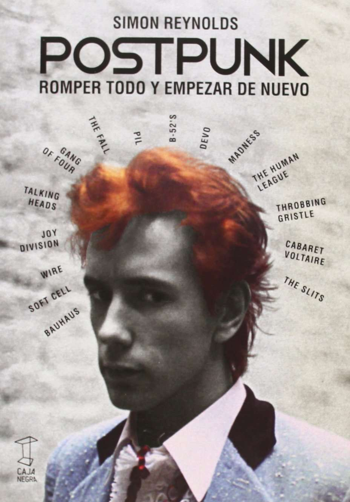

POSTPUNK
ROMPER TODO
Y EMPEZAR DE NUEVO
SIMON REYNOLDS
TRADUCCIÓN / AGOSTINA MARCHI
MATÍAS BATTISTÓN
CAJA■
NEGR�
SY�ESTHESII\
Postpunk: romper todo y empezar de nuevo - 1 a ed. 2a reimp. -
Ciudad Autónoma de Buenos Aires: Caja Negra, 2016.
560 p.; 20xl4 cm.
Traducido por: Agostina Marchi y Matlas Battistón
ISBN 978-987-1622-23-8
1. Historia de la Música. 2. Punk. l. Marchi, Agostina, trad. 11.
Battistón, Matlas, trad. III. Titulo
CDD 780.9
Los capitulas del I al 9 y 13 fueron traducidos por Agostina Marchi y los restantes por Matías Battistón.
Titulo original: Rip lt Up and Start Again. Postpunk (1978-1984)
© 2005, Simon Reynolds
© 2013, 2014, 2016, Caja Negra Editora
Caja Negra &litora
Buenos Aires / Argentina
info@cajanegraeditora.com.ar
www.cajanegraeditora.com.ar
Dirección editorial: Diego Esteras / Ezequiel A. Fanego
Diseño: Juan Marcos Ventura
Producción: Malena Rey
Corrección: Maria José Yema
Impreso en Argentina / Printed in Argentina
A MI HERMANO TIM, QUE FUE QUIEN ME CONVIRTIÓ AL PUNK;
A MI HIJO KIERAN;
EN MEMORIA DE REBECCA PRESS Y BURHAN TUFAIL.
NOTA DEL AUTOR
Abordar un período tan prolongado -ele siete años, de 1978 a 1984- y con una enorme densidad de producción en simultáneo presenta algunos problemas en cuanto a la organización del material. Con tantas cosas sucediendo en paralelo, organizar el libro a partir de una cronología lineal evidentemente no es una op-9
ción. Mi solución fue dividir el período en microrrelatos, la mayoría de ellos circunscriptos a una determinada geografía: escenas que se desarrollan en determinada ciudad (la no wave y el mutant disco de Nueva York, por ejemplo), en una región (la escena de Cleveland-Akron, en Ohio) o incluso en países enteros (Escocia). Otros capítulos se basan en un determinado género o sensibilidad: industrial, synthpop, new pop, y así sucesivamente. Algunos están orientados alrededor de grupos particulares de artistas: el entorno de sellos como Rough Trade y 2-Tone, por ejemplo. En otros casos, reuní a dos grupos basándome en algún vínculo directo y/o en alguna afinidad: tal es el caso de The Pop Group y The Slits, que tienen miembros en común y durante un tiempo estuvieron en el mismo sello discográfico; o Wire y Talking Heads, que pese a no haber estrechado ese tipo de vínculos directos, sí poseen muchos puntos en común. Debido a que el flujo cronológico al interior de cada microrrelato es lineal y sigue el desarrollo de cada proyecto desde sus comienzos hasta su finalización (o lo que me parecía un punto de corte), Postpunk. Romper todo y empezar de nuevo procede dando un paso hacia atrás para luego dar dos hacia delante. Por lo tanto, cada nuevo capítulo comienza en general algo después que el anterior en la línea de tiempo histórico, y así es como al final del libro los acontecimientos tienen lugar en 1983-1984.
INTRODUCCIÓN
Al principio el punk me pasó inadvertido casi por completo. Con trece años, 11
casi catorce, de aquella época, mientras crecía en una ciudad residencial inglesa en la que no pasaba demasiado, solo tengo débiles reminiscencias de 1977.
Recuerdo v agamente fotos a página completa de punks con crestas puntiagudas en una re v ista que v enía con el diario del domingo, pero eso es todo. Sex Piscols diciendo insultos en la tele v isión, "God Sa v e che Queen" versus el Jubileo Real, toda una cultura entera con v ulsionada y estremeciéndose: yo sencillamente no lo noté. En cuanto a aquello que sí me gustaba y a lo que me dedicaba en vez de a todo eso, bueno, es un poco confuso. Mil no v ecientos setenta y siete ... ¿Fue el año en que quise ser humorista gráfico? O, como cal v ez ya me había pasado a la ciencia ficción, ¿estu v e codo 1977 leyendo sistemáticamente cualquier cosa que encontrara de Ballard, Pohl y Dick en el catálogo de la biblioteca local? Lo que sé con seguridad es que la música pop apenas si ejercía influencia alguna en mi conciencia.
Fue mi hermano menor Tim el que empezó a escuchar punk primero.
Siempre había un horroroso barullo saliendo de su cuarto, llegando al mío a tra v és de la pared del dormitorio. Supongo que una de las tantas v eces que fui a golpear su puerta para quejarme sencillamente debo haberme quedado ahí.
Lo primero que me retu v o fue la blasfemia: Johnny Rotten que chil.laba "Fuck
chis and fuck chac/ fuck it ali and fuck her fucking brat" [A la mierda con esto y a la mierda con aquello/ A la mierda con todo y a la mierda con su maldito mocoso malcriado] (después de todo, sí tenía catorce años). Más que los insultos en sí mismos, lo que realmente me mantenía atento era la vehemencia y la virulencia de la interpretación de Rotten, todos esos "fucks" percusivos, el regocijo demoníaco de las letras r estiradas en "brrrrrrrat". Se han expuesto miles de tesis cuidadosamente razonadas que reconocen y convalidan la importancia sociocultural del movimiento, pero, si uno es realmente sincero, hay que decir que una parte gigantesca del atractivo del punk solo tuvo que ver lisa y llanamente con su escandalosa y monstruosa maldad. Piénsese en la enfermedad de Devo, por ejemplo. Jamás en mi vida había escuchado algo tan tenebroso e inmoral como su single "Jocko Horno" y su lado B, "Mongoloid", que aparecieron en nuestra casa por cortesía de un amigo (mucho más adelantado que nosotros, claramente).
Cuando empecé a escuchar a Sex Pistols y demás, en algún momento a mediados de 1978, no tenía ni la más mínima idea de que todo eso ya estaba ofi-12
cialmente "muerto". Sex Pistols se había separado hacía rato. Rotten ya había formado Public lmage Ltd. Como había estado ocupado en otras cosas y me había perdido todo el nacimiento, la vida y la muerte del punk, también me salteé astutamente el luto posterior, ese horrible estrellarse contra el suelo que experimentaron en 1978 todos aquellos que habían estado "allí" durante el excitante pico de adrenalina de 1977. Mi descubrimiento tardío del punk coincidió con el momento en el que las cosas empezaban a repuntar de nuevo, con el nacimiento de lo que, enseguida, se conoció como postpunk, el tema de este libro. Así que estaba escuchando Germfree Adolescents de X-Ray Spex, pero también el primer disco de PiL, Fear of Music de los Talking Heads y Cut de The Slits. Todo era un brillante y explosivo arrebato de emoción.
Los historiadores de la música exaltan eso de haber estado en el lugar correcto en el momento justo, esos períodos y esos emplazamientos críticos en los que se gestan las revoluciones y los movimientos. Eso es complicado para aquellos de nosotros que estamos y/o estuvimos atrapados en los suburbios o en territorio provincial. Este libro es para, y sobre, aquellos que no estuvieron allí en el lugar correcto en el momento justo (en el caso del punk, Londres y Nueva York alrededor de 1976), pero que, no obstante, se negaron a creer que todo había terminado y que todo estaba terminado antes de que pudieran sumarse.
Los jóvenes tienen un derecho biológico a estar entusiasmados respecto de los tiempos que les tocan vivir. Si uno tiene mucha suerte, esa urgencia hormonal es acompañada de la insurgencia de la era, y la necesidad inherente a todo adolescente de sorprenderse y creer coincide con un período de abundancia objetiva. Los años de plenitud del postpunk -la media década que va de 1978 a 1982- fueron eso: una suerte. He estado cerca de sentirme de ese modo desde entonces, pero nunca volví a sentirme tan emocionado como en aquel momento. Ciertamente, nunca volví a estar tan enfocado en el presente. Lo que es raro, al menos tal como lo recuerdo hoy, es que durante esa época nunca compraba discos viejos. ¿Por qué lo habría hecho? Existían tantos discos nuevos para comprar que, sencillamente, no había razón alguna para investigar el pasado. Tenía cassettes con compilaciones de lo mejor de los Beatles y los Stones que había grabado de amigos y una copia de la antología de The Doors Weird Scenes /mide the Goldmine, pero eso era todo. En parte, algo de esto tenía que ver con el hecho de que la cultura de las reediciones que hoy nos inunda en aquel momento no existía; las compañías discográficas de hecho
borraban discos por aquel entonces, así que había enormes franjas del pasado 13
reciente a las que era imposible acceder. Pero principalmente se trataba de que no había tiempo para mirar hacia atrás con melancolía hacia algo que uno nunca había vivido en carne propia. Estaba pasando demasiado ahora.
En su momento no lo pensé de este modo, pero, visto en retrospectiva, en tanto época singular de la cultura pop, el período 1978-1982 compite con esos legendarios años que fueron de 1963 a 1967 y son comúnmente conocidos como los sesenta. La era postpunk soporta la comparación con los sesenta tanto en términos de la mera cantidad de música genial que fue creada como en cuanto al espíritu de aventura y el idealismo que la insuflaron, y en términos de la manera en que la música parecía estar inextricablemente conectada a la turbulencia política y social de su tiempo. Había una mezcla parecida de expectación y ansiedad, una manía similar por todo lo que fuera nuevo y futurista unida a un miedo palpable y concreto respecto de lo que el futuro podía deparar.
No es que sea una persona especialmente patriótica ni nada por el estilo, pero también es notable que tanto los sesenta como el movimiento postpunk hayan sido períodos durante los cuales Gran Bretaña gobernó las olas de la música pop. Que es la razón por la cual este libro se centra principalmente en el Reino Unido. Por supuesto, también se ocupa de ciudades estadouni-
denses en las que el punk se expresó de modo irrefutable y grandioso: Nueva York y San Francisco, las capitales bohemias; Cleveland y Akron, las terroríficas zonas postindustriales de Ohio; ciudades universitarias como Boston, Massachusetts y Athens, Georgia. Sin embargo, en los Estados Unidos, el punk y el postpunk fueron culturas mucho más subterráneas y minoritarias que en el Reino Unido, donde uno podía escuchar a The Fall y a Joy Division en la radio nacional y bandas tan extremas como PiL, de hecho, tenían hits en el Top 20 y, gracias al programa de televisión semanal Top of the Pops, llegaban a más de diez millones de hogares. Lamentablemente, por cuestiones de espacio y salud mental he decidido no meterme con el postpunk de europa continental y Australia a excepción de algunas bandas clave, como O.A.E
y The Birthday Party, que han tenido un impacto significativo en la cultura rock anglosajona.
Tengo razones tanto personales como "objetivas" para escribir este libro.
Ante todo, entre las rawnes objetivas, está el hecho de que el postpunk es un período que ha sido seriamente desatendido por los historiadores. Hay una 14
veintena de libros sobre el punk rock y todo lo que pasó entre 1975 y 1977, pero no hay prácticamente nada acerca de lo que ocurrió después. Las historias convencionales del punk siempre terminan más o menos con su "muerte", en 1978, cuando Sex Pistols se autodestruyó. En las versiones más extre�
mas y poco serias de esta historia {los documentales televisivos sobre la historia del rock son particularmente culpables de esto), por lo general, se da a entender que no pasó nada que fuese realmente relevante entre el punk rock y el grunge, entre Never Mind the Bollocks y Nevermind. Incluso después del boom de la nostalgia por los ochenta, esa década aún sigue tendiendo a ser considerada un baldío musical solo redimido por forajidos como Prince y Pet Shop Boys o personajes dignos de respeto como R.E.M. y Springsteen. Los primeros años de los ochenta, en especial, todavía son considerados como una franja particularmente chistosa y un tanto camp, como una era que solo estuvo caracterizada por pretenciosos intentos de usar el video como una forma de arte, y vanidosos inglesitos rodeados de sintetizadores y con los ojos delineados y cortes de pelo ridículos. Han emergido fragmentos de la historia postpunk aquí y allá. Pero nadie ha intentado capturar la era postpunk como lo que fue, una contracultura que, aunque fragmentada, compartió la creencia de que la música podía cambiar el mundo.
Siendo todo lo imparcial y desapegado que me es posible, me da la sensación de que el largo "después" del punk entre 1978 y 1984 fue mucho más interesante, musicalmente hablando, que todo lo que pasó en 1976 y 1977, cuando el punk montó su reviva/ del rock 'n' roll "de vuelta a las raíces". Aun en términos de su influencia cultural más general, podría discutirse tranquilamente que el punk tuvo sus repercusiones más provocativas mucho después de su supuesta defunción. Parte del argumento de este libro es que los movimientos revolucionarios al interior de la cultura pop suelen tener su mayor impacto después de que el "momento" supuestamente ha pasado, y cuando las ideas ya se propagaron al exterior de las elites bohemias y las camarillas vanguardistas metropolitanas a las que en su origen les "pertenecieron" hacia los suburbios y las regiones periféricas.
Otra razón objetiva para este libro es que ha habido un inmenso resurgimiento del interés por este período, con compilaciones y reediciones de discos postpunk de archivo y toda una camada de bandas nuevas que se han moldeado a partir de géneros postpunk como la no wave, el punk funk, el mutant disco y la música industrial. Toda una nueva generación de músicos y aman-15
tes de la música jóvenes ha alcanzado finalmente la mayoría de edad sin ningún recuerdo de esta era. Algunos veinteañeros ni siquiera habían nacido en el año que este libro cierra, 1984, y en consecuencia, hallan todo este período fascinante e inmensamente intrigante. De hecho, es precisamente por haber sido tan desatendido durante tanto tiempo que el postpunk ofrece hoy una veta interesantísima para la floreciente industria retro.
Dije que también había razones subjetivas para que escribiera este libro.
La razón subjetiva número uno es que recuerdo este período como súper abundante, como una edad de oro de lo nuevo y el ahora que creaba una sensación de estar moviéndose a toda velocidad hacia el futuro. La razón subjetiva número dos tiene más que ver con el presente. Cuando los críticos de rock llegan a cierta edad se empiezan a preguntar si toda la energía mental y emocional que invirtieron en esto de la música fue en realidad un movimiento tan acertado. No es exactamente una cuestión de falta repentina de seguridad o confianza en uno mismo, sino, más bien, algo así como un pliegue o un doblez en la certidumbre. En mi caso en particular, esto me llevó a preguntarme cuándo había sido que decidí embarcarme en una vida que tuviera que ver casi exclusivamente con tomarse la música en serio. ¿Qué me hizo creer que la mú-
sica podía importar tanto? Fue, por supuesto, el hecho de que crecí en la era postpunk. Ese doble golpe casi simultáneo de Never Mind the Bollocks de Sex Pistols y Metal Box de PiL fue lo que me puso en este camino en el que estoy.
También fue escribir acerca de estos discos -y acerca de otros tantos discos como esos- en la prensa especializada lo que me formó; escribir semana tras semana sencillamente exploró y puso a prueba la cuestión de con cuánta seriedad uno podía tomarse la música (una conversación que continúa hasta el día de hoy de diversas maneras y en otros espacios). Así que este libro también es, en parte, un ajuste de cuentas con mi juventud. ¿Y a qué conclusión llegué? Tendrán que seguir leyendo.
16
#
PROLOGO
}r 11ftli
Los Sex Pistols cantaban "No future".
19
Pero sí hay futuro, y estamos intentando construirlo.
Alfen Ravenstine, Pere Ubu, 1978
Hacia el verano de 1977, el punk se había convertido en una parodia de sí mismo. Muchos de los integrantes originales del movimiento sentían que algo cargado de posibilidades y de múltiples alternativas había degenerado en mera fórmula comercial. O peor aún, había demostrado ser una inyección rejuvenecedora para la industria musical establecida que los punks habían tenido la esperanza de derrocar.
Fue en este momento cuando comenzó a fracturarse la frágil unidad que el punk había forjado entre chicos de procedencia obrera y bohemios arty de clase media. De un lado quedaron los "punks verdaderos", populistas (que, después, habrían de evolucionar hacia los movimientos Oi! y hardcore), que creían que la música debía mantenerse accesible y sin pretensiones, como para seguir cumpliendo su rol de vocera de la rabia de las calles. Del otro lado estaba la vanguardia que habría de conocerse como postpunk, que encontró en 1977 no un rerorno al rock crudo, sino la oportunidad de establecer una ruptura con la tradición.
La vanguardia postpunk -bandas como PiL, Joy Division, Talking Heads, Throbbing Grisde, Contortions y Scritti Politti- definió el punk como imperativo de cambio constante. Entregados a la tarea de concretar la revolución musical inconclusa del punk, exploraron nuevas posibilidades al incorporar la electrónica, el noise, el jazz y la música contemporánea, junto con las técnicas de producción del reggae, el dub y la música disco.
Algunos acusaron a estos experimentadores de no haber hecho más que recaer en ese elitismo del art rock que, originalmente, el punk se había propuesto destruir. Seguramente es cierto que un alto porcentaje de músicos postpunk provenía del entorno de las escuelas de arte. La escena no wave en Nueva York, por ejemplo, estaba integrada casi en su totalidad por pintores, cineastas, poetas y artistas escénicos. Gang of Four, Cabaret Voltaire, Wire yThe Raincoats son solo algunas de las bandas británicas fundadas por graduados de bellas artes o de diseño. Especialmente en Gran Bretaña, las escuelas de arte funcionaron largo tiempo como una especie de bohemia subsidiada por el Estado, un lugar donde los jóvenes obreros demasiado rebeldes para una vida de trabajo se mez-20
ciaban con chicos burgueses que vivían como pobres y eran demasiado caprichosos para una carrera como cuadros intermedios de la administración empresarial. Después de la graduación, muchos se volcaron a la música pop como un modo de sostener el estilo de vida experimental que habían disfrutado en la escuela de bellas artes y, de paso, quizás -solo quizás- también vivir de eso.
Por supuesto, no todos en el postpunk asistieron a escuelas de arte o, incluso, a la universidad. Autodidactas fragmentarios y omnívoros, ciertas figuras como John Lydon o Mark E. Smith, de The Fall, se adecúan al síndrome del intelectual antiintelectual: lectores voraces y, sin embargo, desdeñosos respecto de la academia y desconfiados del arte en sus formas institucionalizadas.
Aunque, en realidad: ¿qué podría ser más arty que querer destruir el arte, echar por tierra los límites que lo mantienen aislado de la vida cotidiana?
Aquellos años del postpunk que van de 1978 a 1984 fueron testigos del saqueo sistemático del arte y la literatura modernista del siglo XX. El período postpunk en su conjunto aparece como un intento de recrear virtualmente todas las principales temáticas y técnicas modernistas a través del medium de la música pop. Cabaret Voltaire tomó prestado su nombre de Dada. Pere Ubu adoptó el suyo de Alfred Jarry. Talking Heads transformó un poema sonoro de Hugo Ball en una pista de dance disco-tribal. Gang ofFour, inspirados por
el efecto de extrañamiento de Brecht y de Godard, trató de deconstruir el rock
-¡incluso rockeando duro!. Los compositores de letras absorbieron la ciencia ficción radical de William S. Burroughs, J.G. Ballard y Philip K. Dick, y las técnicas del collage y del cut-up se trasplantaron a la música. Duchamp, mediado por el movimiento Fluxus de los años sesenta, era santo patrono de la no wave. El arte de tapa de los discos del período estaba en sintonía con las aspiraciones neomodernistas en las letras y la música, a partir del trabajo de diseñadores gráficos como Malcolm Garret y Peter Saville, y de sellos como Factory y Fast Product, que tomaban elementos del constructivismo, De Stijl, Bauhaus, John Heartfield y Die Neue Typographie. Este frenético asalto a los archivos del modernismo llegó a su punto culminante con la fundación del sello de renegade pop ZTT -abreviatura de "ZangTuum Tumb", un fragmento de prosa poética futurista italiana- y de su grupo conceptual Art of Noise, bautizado en homenaje al manifiesto para una música futurista de Luigi Russolo.
Al tomar la palabra "modernista" en un sentido menos específico, las bandas de postpunk se hallaban firmemente comprometidas con la idea de hacer música moderna. Estaban por completo convencidas de que en el rock toda-21
vía había lugares por explorar, todo un futuro nuevo por inventar. Para la vanguardia postpunk, el punk había fracasado porque había atentado contra el statu quo del rock apelando a una música convencional (rock 'n' roll de los cincuenta, garage punk, mod), que databa incluso de antes de la existencia de megabandas como Led Zeppelin y Pink Floyd. Los artistas postpunk tomaron distancia de tal postura, bajo la creencia de que "contenidos radicales exigen formas radicales".
Una curiosa consecuencia de esta convicción de que el rock 'n' roll ya estaba agotado fue la enorme masa de insultos descargada sobre Chuck Berry.
Luego de haber sido una influencia clave para el punk rock, por medio de las guitarras de Johnny Thunders y de Steve Jones, Berry se convirtió en una piedra de toque negativa, señalado una y otra vez para explicitar eso que debía evitarse. Tal vez el primer ejemplo de Berry-fobia se encuentre tempranamente en los demos de Sex Pistols exhumados en La gran estafa del Rock' n' rol/. La banda comienza a improvisar sobre "Johnny B. Goode" y, en ese momento, Johnny Rotten -el estera oculto del grupo, quien luego formaría el conjunto arquetípico del postpunk, Public lmage Ltd.- farfulla el tema con desgano y luego dice: "Mierda, esto es horrible. Basta, odio esta mierda ... Aaarrrgh". El
aullido disgustado y exhausto de Rotten -suena como si se estuviese asfixiando, sofocado por un sonido que huele a rancio- fue replicado por muchos grupos postpunk. Cabaret Voltaire, por ejemplo, se quejaba de que "rock 'n' roll no es vomitar riffs de Chuck Berry".
Más que los riffs rama-lama' o los acordes bluseros, el panteón postpunk de innovadores de la guitarra se mostró partidario de la angularidad, de un definido registro punzante. Evitaban los solos, excepto por breves irrupciones de la guitarra principal, que se integraba a partir de una forma de tocar predominantemente orientada hacia el ritmo. En lugar de un sonido "gordo", guitarristas como David Byrne, de Talking Heads, Martin Bramah, de The Fall, o Viv Albertine, de The Slits, preferían un estilo de "guitarra rítmica escuálida", inspirado con frecuencia en el reggae o el funk. Este estilo más compacto y descarnado de tocar la guitarra no pretendía llenar cada rincón del espacio sonoro, lo cual permitió que el bajo pasara al frente, abandonando su rol tradicionalmente insignificante, de apoyo, hasta transformarse en voz instrumental principal, que cumplía una función melódica incluso cuando se ocupaba 22
de llevar el groove. En este sentido, los bajistas postpunk se ponían al día con las innovaciones de Sly Stone y James Brown, y aprendían del reggae roots y del dub contemporáneos. Al buscar un sonido militante y agresivamente monolítico, el punk en su mayor parte había purgado el elemento negro del rock, cortando los vínculos con el R&B y rechazando, al mismo tiempo, la música disco por escapista e insulsa. Hacia 1978, sin embargo, empezó a difundirse entre los círculos postpunk el concepto de una música dance peligrosa, expresada en términos de perverted disco y de avant funk.
Además de la sensualidad y el swing de la música dance, el punk había rechazado también todos los géneros compuestos (jazz-rock, country-rock, folkrock, classical-rock, etcétera) que proliferaron a comienzos de los setenta. Para los punks, este tipo de material olía a alardes de virtuosismo, a zapadas divagantes y a cháchara hippie del tipo "todo es música, man". Definiéndose por contraste con este eclecticismo fláccido, de puertas abiertas a cualquier cosa, el punk proponía un purismo estridente. Si bien a fines de los setenta la noción de fusión estaba desacreditada, el postpunk marcó el comienzo de una l. Riffs al estilo de bandas como MCS, cuya canción "Rama Lama Fa Fa Fa" (1969) es considerada precursora del punk. [N. de la T.]
nueva fase en la búsqueda por fuera de los estrechos parámetros del rock, hacia la América negra y Jamaica, obviamente, pero también hacia África y otras zonas de lo que luego sería llamado "world music".
El postpunk también reconstruyó puentes con el propio pasado del rock, sobre todo con amplias franjas de lo que había quedado emplazado extramuros cuando el punk declaró a 1976 como Año Cero. El punk instaló un mito que todavía hoy sobrevive en algunos suburbios: la idea de que los años prepunk de comienzos de los setenta eran un páramo musical. En realidad, se trata de uno de los períodos más ricos y variados de la historia del rock. De modo tentativo, en un comienzo -después de todo, nadie quería ser acusado de hippie encubierto o de rocker progresivo disfrazado-, los grupos postpunk redescubrieron tales riquezas, tomando elementos del costado arty del glam (David Bowie y Roxy Music), de excéntricos que iban más allá del rock como Captain Beefheart, y recuperando en algunos casos las aristas más agudas del rock progresivo (como Soft Machine, K.ing Crimson e, incluso, Frank Zappa).
En cierto sentido, el postpunk era rock progresivo, solo que drásticamente ra-cionalizado y revigorizado, con una sensibilidad más austera, sin ostentación 23
de virtuosismo, por no mencionar sus mejores cortes de pelo.
Lo cierto es que algunos de los grupos postpunk más característicos -Devo, Throbbing Gristle, Cabaret Voltaire, This Heat- eran en realidad entidades prepunk, que existían de alguna u otra manera años desde antes del disco debut de los Ramones de 1976. Cuando sobrevino el punk, la industria discográfica sufrió una gran confusión, que volvió a los grandes sellos vulnerables a la sugestión y diluyó todas las reglas estéticas, de modo que cualquier anormal o extremista tenía de repente su oportunidad. A través de esta brecha abierta en el muro de los negocios, irrumpían, como de costumbre, toda clase de freaks sombríos que no dejaban pasar su chance de llegar a un público más amplio.
Pero el postpunk reconocía su filiación en una clase particular de art rock, no en la pretensión del rock progresivo de fusionar guitarras eléctricas amplificadas con la instrumentación clásica y las composiciones extensas del siglo XIX, sino en la línea que va desde The Velvet Underground, por medio del kraut rock y la vertiente más intelectual del glam (Bowie/Roxy Music), que respetaba el principio minimalista "menos es más". Para un cierto grupo de hipsters, la música que los sostuvo durante el "páramo musical" de los setenta estaba formada por un racimo de espíritus afines -Lou Reed, John Cale, Nico,
Iggy Pop, David Bowie, Brian Eno-, unidos por su procedencia o su deuda con The Velvet Underground, que habían colaborado entre sí en diversas combinaciones a lo largo del período.
En particular, David Bowie se asoció con casi todas estas personas en diferentes ocasiones, ya sea produciendo sus discos o colaborando con ellos de otra manera. Fue el eje de conexión, el más grande diletante del rock, siempre en movimiento, buscando constantemente el próximo límite. Más que cualquier otro, fue Bowie la inspiración clave para el ethos postpunk del cambio constante. 1977 puede haber sido el año del debut de The Clash y de Never Mind
the Bollocks de Sex Pistols, pero la verdad es que la música postpunk fue más profundamente afectada por los cuatro discos vinculados con Bowie editados ese año, sus propios Low y Heroes, y Lust far Life y The Idiot de Iggy Pop (ambos producidos por Bowie). Grabada en Berlín Occidental, esta impresionante seguidilla de discos impactó con fuerza en los oyentes que ya sospechaban que el punk rock se revelaba como más de lo mismo. Los discos de Bowie e Iggy marcaron un distanciamiento respecto de los Estados Unidos y del rock 'n' roll 24
y un acercamiento hacia Europa y un sonido cool, controlado, modelado sobre la base de los ritmos "motorik" teutónicos de Kraftwerk y Neu! -donde los sintetizadores tenían un rol tan importante como las guitarras. En entrevistas, Bowie habló de su traslado a Berlín como un intento por separarse de los Estados Unidos, tanto musical (desde el momento en que el soul y el funk habían tenido influencia sobre Young Americans) como espiritualmente (un escape de la decadencia del rock 'n' roll de Los Ángeles). Configurado a partir de esta deliberada hazaña de dislocación y autoalienación, Low hada honor al título provisorio original del álbum, New Music Night and Day, especialmente en su sorprendente lado dos, una suite de atmósferas instrumentales sombrías y crepusculares, con cantos semejantes a lamentos sin palabras. Low, dijo Bowie, había sido una respuesta a la experiencia de "haber visto el Bloque Oriental, el modo en que Berlín Este sobrevivía en ese medio, que era algo que yo no podía expresar en palabras. Entonces se requerían texturas". Por este motivo se inclinó hacia Brian Eno, texturólogo supremo, como su mentor y mano derecha durante la realización de Low y de Heroes. Ya influyente a causa de los ruidos de sintetizador que desplegaba en Roxy Music y en sus álbumes solistas proto-new wave, Eno se convirtió, después de la trilogía berlinesa de Bowie, en uno de los productores que definieron la era: documentó la escena no wave
de New York, y trabajó con Devo, Talk.ing Heads y U2. ''Algunas bandas fueron a escuelas de arte -bromeó Bono en cierta ocasión-. Nosotros fuimos a Brian Eno".
El nuevo europeísmo de Bowie y de Eno se hallaba en sintonía con la sensación postpunk de que los Estados Unidos --o al menos la norteamérica
blanca- eran política y musicalmente reaccionarios. A la hora de buscar inspiración contemporánea, el postpunk miraba hacia otros lugares más allá de la patria originaria del rock 'n' roll, como la norteamérica negra y urbana, Jamaica y Europa, entre otros. Para muchos postpunks, los singles más significativos de 1977 no eran "White Riot" ni "God Save the Queen", sino
"Trans-Europe Express", un canto fúnebre metronómico de metal sobre metal para la era industrial compuesto por la banda alemana Kraftwerk, y el hit eurodisco de Donna Summer "I feel !ove", producido a partir de sonidos sintéticos por Giorgio Moroder, italiano residente en Munich. La electrónica disco de Moroder y el synth pop sereno de Kraftwerk conjugaron refulgentes visiones de una Neue Europa moderna, orientada hacia el futuro y autén-ticamente postrock, en el sentido de no tener prácticamente deuda alguna 25
con la música estadounidense.
Junto con la radicalización de la forma del rock con dosis de ritmo negro y electrónica europea, los artistas postpunk estaban igualmente comprometidos con una radicalización del contenido de la ecuación musical. El acercamiento del punk a la política -furia cruda o protesta agit-pop- resultaba demasiado simple, demasiado panfletario a los ojos de la vanguardia postpunk, por lo que pretendieron desplegar técnicas más sofisticadas y oblicuas. Gang of Four y Scritti Politti abandonaron el estilo de denuncia directa de "decir las cosas como son", optando por letras que exponían y dramatizaban los mecanismos de poder operantes en la vida cotidiana. "Cuestiona todo" era la frase del momento. Estas bandas demostraban que "lo personal es político" al diseccionar el consumismo, las relaciones sexuales, las nociones de sentido común acerca de qué es natural o normal y los modos en que las vivencias más espontáneas y más íntimas se hallan en realidad determinadas de antemano por fuerzas superiores. Al mismo tiempo, las más agudas de entre tales agrupaciones capturaron el modo en que
"lo político es personal", ilustrando los procesos por medio de los cuales los acontecimientos actuales y las acciones de gobierno invaden la vida cotidiana y acechan los sueños y las pesadillas privadas de cada uno.
En lo que respecta al compromiso político entendido en su sentido convencional -referido al mundo de las manifestaciones, el activismo de base y la
lucha organizada-, las bandas postpunk eran más ambivalentes. En tanto bohemios inconformistas, se sentían incómodos con la política de la solidaridad
o las llamadas a acatar la línea del partido. Consideraban que la franqueza demagógica de ciertos músicos abiertamente politizados de la época (como Crass
o Tom Robinson) era demasiado literal y antiestética, y creían que ese sermón
no solo resultaba condescendiente con el oyente, sino que la mayoría de las
veces se revelaba como ejercicio inútil de "prédica para conversos". Si bien muchos de los grupos postpunk participaron de Rock Against Racism [Rock contra el racismo]. mantenían una actitud reticente con RAR y su colectivo hermano, la liga antinazi, por sospechar que se trataba de frentes de la izquierda
militante del Partido de los Trabajadores Socialistas, que otorgaba valor a la
música exclusivamente en tanto herramienta de radicalización y movilización
de la juventud. Al mismo tiempo, el postpunk heredó los sueños del punk de
resucitar la música rock como fuerza de cambio, si no del mundo, al menos
26
de la conciencia de los oyentes individuales. Pero en lugar de que la música sirviera de plataforma meramente neutral para el agit-pop, esta forma de radicalismo se manifestaba tanto en las letras como en el sonido. Más aún, el potencial subversivo de las letras dependía tanto de sus propiedades estético-formales
(el grado de innovación en el nivel del lenguaje o de la narración) como del
mensaje o la crítica que transmitían.
El postpunk fue un asombroso período de experimentación letrística y
vocal. Mark E. Smith, de The Fa!!, inventó una suerte de realismo mágico de
Inglaterra del norte que mezclaba la mugre industrial con lo sobrenatural y lo
extraño, todo vocalizado mediante intervenciones de una sola nota que se ubicaban en algún lugar a mitad de camino entre el monólogo motorizado por
las anfetaminas y el relato de desorientación etílica. La gestualidad agitada,
neurótica, de David Byrne encajaba perfectamente con su irónico y seco examen de temas tan lejanos al rock como animales, burocracia, "edificios y comida''. Mark Stewart, de The Pop Group, aullaba encantamientos cargados de
imágenes, como una cruza entre Artaud y James Brown. Este fue también un
gran período para la expresión propiamente femenina: perspectivas nunca escuchadas hasta el momento en los tonos disonantes de The Slits, Lydia Lunch,
Ludus y The Raincoats. Otros cantantes-letristas -lan Curtis, de Joy Division,
Paul Haig, de Josef K- se habían abismado en el malestar sombrío y en la angustia asfixiante de Dostoievski, Kafka, Conrad y Beckett. A la manera de micronovelas de tres minutos, sus canciones lidiaban con dilemas existencialistas clásicos: la lucha y el sufrimiento de ser un "yo"; amor contra aislamiento; el absurdo de la existencia; la capacidad humana para la perversión y el resentimiento; la eterna sentencia: "suicidarse: ¿por qué no?".
Enfrentando estos aspectos atemporales de la condición humana, el postpunk también intervenía en el Zeitgeist político. Especialmente, en los tres años que transcurrieron entre 1 978 y 1 980, las dislocaciones causadas por la mutación económica y la agitación geopolítica generaron una tremenda sensación de tensión y de temor. Gran Bretaña fue testigo del resurgir de la extrema derecha y de los partidos neofascistas, tanto en la política electoral como en las formas sangrientas de la violencia callejera. La Guerra Fría alcanzó un pico de frialdad inédito. La revista musical más conocida de Inglaterra, New Musical
Express, publicaba regularmente una columna llamada "Rubias de Plutonio", en torno al despliegue de los misiles crucero estadounidenses en territorio británico. Singles como "Breathing" de Kate Bush y "The Eanh Dies Screaming"
27
de UB40 introdujeron la angustia nuclear en el Top 20 e innumerables grupos postpunk -desde This Heat en su disco conceptual Deceit hasta Young Marble Giants con su clásico single "Final Day"- le cantaban al Armagedón como posibilidad crucial e inminente.
Parte de lo conmovedor de este período de música disidente reside en su creciente falta de sincronía en relación con la cultura en sentido más amplio, que estaba produciendo un viraje a la derecha. El período postpunk comenzó con la parálisis, frustración y estancamiento de la política de izquierda liberal, bajo el gobierno de centro-izquierda del primer ministro laborista Jim Callaghan y el presidente demócrata Jimmy Carter. Callaghan y Carter fueron casi simultáneamente desplazados por Margaret Thatcher y Ronald Reagan -líderes de derecha populistas (y populares), que impulsaron políticas económicas monetaristas que resultaron en desempleo masivo y una profundización de las fracturas sociales.
Introduciéndonos en un largo período de política conservadora que duró doce años en los Estados Unidos y dieciséis en Inglaterra, Thatcher y Reagan representaban un masivo contragolpe tanto para los contraculturales sesenta como para los permisivos setenta. En respuesta, el postpunk intentó construir
una cultura alternativa con su propia infraestructura independiente de sellos, distribuidoras y disquerías. La necesidad de "control completo" (sobre el cual The Clash solo podía cantar amargamente, luego de haber cedido la canción que llevaba ese título a la CBS) condujo al nacimiento de sellos independientes pioneros tales como Rough Trade, Mute, Factory, Subterranean y SST. El concepto de do it yourself[hazlo tú mismo) proliferó como un virus, propagando toda una pandemia de cultura samizdat:2 bandas que editaban sus propios discos, promotores locales que organizaban recitales, colectivos de músicos que creaban espacios para que las bandas pudiesen tocar, pequeñas revistas y fanzines que funcionaban como medios de comunicación alternativos. Los sellos independientes conformaban una especie de microcapitalismo anticorporativo, basado menos en una ideología de izquierda que en la convicción de que los sellos más importantes eran demasiado lentos, faltos de imaginación y orientados a lo comercial como para alimentar la música más crucial del momento.
El postpunk estaba comprometido con las políticas de la música misma así como con cualquier otra cosa que sucediera en el "mundo real". La intención 28
era sabotear la fábrica de sueños del rock, esa industria del ocio que encauzaba la energía y el idealismo de la juventud hacia un cul-de-sac cultural mientras producía, al mismo tiempo, enormes masas de ganancia para el capitalismo corporativo. El término rockism [rockismo), acuñado por el grupo de Liverpool Wah! Heat, se diseminó como la síntesis de todo un conjunto de rutinas anquilosadas que restringían la creatividad y suprimían la sorpresa. Los canales de acción establecidos que los postpunk se negaban a perpetuar iban desde las técnicas convencionales de producción (como el uso del reverb para darle a los discos una sensación de sonido en vivo, grabado en un gran ambiente) hasta los predecibles rituales de giras y recitales (algunas bandas postpunk se rehusaban a hacer bises, mientras que otras experimentaban con el arte multimedia y el arte performático). Con el fin de romper el trance de normalidad del negocio del rock y sacudir al oyente hacia una wna de lucidez, el postpunk rebosaba de críticas metamusicales y de micromanifiestos, canciones tales como
"Part Time Punks" de Television Personalities y "A Different Story" de Subway 2. El término "samizdat" se refiere a la difusión clandestina de literatura prohibida por el régimen soviético y, por extensión, también por los gobiernos comunistas de Europa del Este durante la Guerra Fría. [N. de la T.)
Sect tematizaban el fracaso del punk y especulaban acerca del futuro. Parte de esta aguda autoconciencia del postpunk provenía de la sensibilidad radicalmente autocrítica que rodeaba al arte conceptual de los setenta , cuando el discurso en torno a la obra era tan importante como los objetos artísticos en sí mismos.
La naturaleza metamusical de gran parte del postpunk ayuda a e x plicar el e x traordinario poder de la prensa de rock durante ese período , con algunos críticos que llegaron , incluso , a tomar parte en el modelo y la orientación de la cultura postpunk. Este rol creciente de los periódicos musicales comenzó con el punk. Como la radio y la TV en general despreciaron el punk , como los medios gráficos masivos eran en su mayor parte hostiles y durante un tiempo les resultó muy difícil a los grupos punk conseguir fechas para tocar , los semanarios musicales británicos -New Musical Express (NME), Sounds, Melody Maker y Record Mirror- asumieron una enorme importancia. De 1978 a 198 1 , el NME, líder del mercado , tenía una circulación que oscilaba entre los 200.000
y los 270.000 ejemplares , cuyo público real de lectores era tres o cuatro veces mayor que esa cifra. El punk movilizó una enorme audiencia que buscaba un 29
camino hacia el futuro y que estaba dispuesta a ser guiada. La prensa musical no tenía prácticamente rivales en esta función -las revistas mensuales de interés general (como Q) o las revistas de tendencias (como The Face) aún no e x istían , y la cobertura del pop en los diarios reconocidos era muy reducida.
En consecuencia , la prensa musical tuvo una enorme influencia , y determinados escritores -los impulsivos , los aquejados por complejos mesiánicos- disfrutaron de un prestigio y de un poder que hoy resultan difíciles de imaginar. Al identificar (y e x agerar) las cone x iones entre grupos y articulando los manifiestos no escritos de estos movimientos y escenas con base en distintas ciudades , los críticos lograron intensificar y acelerar el desarrollo de la música postpunk. En Sounds, desde fines de 1977 en adelante , Jon Savage defendía la categoría de
"new musick"3 para nombrar el costado de ciencia ficción distópico-industrial del postpunk. Desde NME, Paul Morley pasó de mitologizar a Manchester y Joy Division a imaginar el concepto de "new pop" , antes de inventar grupos como Frankie Goes to Hollywood y Art of Noise. Garry Bushell de Sounds era el ide-3. El término "new musick" es un neologismo compuesto por "music" y "sick": "nueva música enferma''. [N. de la T.]
ólogo del Oi!. Esta combinación de activistas críticos y de músicos cuyo trabajo era una forma de criticism o activo sirvió de combustible a un síndrome de evolución de carácter arrollador. Una tendencia competía con otra y cada nuevo desarrollo se veía rápidamente seguido de una etapa reactiva o de un viraje brusco. Todo esto contribuía a un sentimiento epocal de vertiginosa proyección hacia el futuro, al mismo tiempo que aceleraba la desintegración de la unidad del punk en diversas facciones postpunk en pugna.
Los músicos y los periodistas fraternizaron considerablemente durante esta época, una afinidad relacionada tal vez con el sentido de mutua solidaridad entre camaradas en la guerra cultural del postpunk contra la Vieja Ola, pero también con las luchas políticas del momento. Los roles se intercambiaban.
Algunos periodistas tocaban en bandas o grababan discos, y había músicos que escribían resefias de discos, como David Thomas, de Pere Ubu (bajo el seudónimo de Crocus Behemoth), Steven Morris, de Joy Divison, y Steve Walsh, de Manicured Noise. Dado que tantas personas involucradas en el postpunk no eran inicialmente músicos o provenían de otros campos artísticos, la brecha 30
entre aquellos que "hacían" y aquellos que "comentaban" no era tan amplia como en la era prepunk. Genesis P-Orridge, de Throbbing Gristle, por ejemplo, se describía a sí mismo como escritor y pensador, no como músico. Incluso llegó a utilizar el adjetivo "periodístico" como un término descriptivo positivo
para explicar la aproximación documentalista de Throbbing Gristle a las ásperas realidades postindustriales.
Los cambios en el estilo y en los métodos de la composición de rock intensificaron la sensación postpunk de un avance vertiginoso hacia toda una nueva era. Los periodistas de música de principios de los setenta solían combinar las virtudes tradicionales de la crítica (objetividad, documentación sólida, conocimiento autorizado) con una soltura e informalidad rockera influenciada por el nuevo periodismo. Este estilo relajado, cercano a la oralidad
-plagado de slang, guifios y referencias a drogas y chicas-, no le sentaba bien al postpunk. Los pilares intelectuales de la vieja crítica de rock -la indisciplina masculina entendida como rebelión, la locura como genialidad, el culto a la credibilidad callejera y a la autenticidad- eran algunas de las posiciones que estaban siendo revisadas y desafiadas por la vanguardia anti-rockista. Emergió una nueva generación de periodistas musicales, cuya escritura parecía estar hecha del mismo material que el tipo de música que defendían. La urgencia
sin ornamentos y las líneas directas de su prosa reflejaban la austeridad metálica de grupos como Wire, Siouxsie and the Banshees y Gang of Four, del mismo modo que, en la estética del diseño de las tapas de los discos de la época, predominaba una geometría de volúmenes puros y definidos, ángulos marcados y bloques de colores primarios. La nueva escuela de escritura musical fusionaba puritanismo y actitud lúdica de un modo que se diferenciaba del estilo informal del viejo periodismo de rock, al tiempo que perforaba un denso núcleo de certezas, todos aquellos presupuestos ocultos y nociones implícitas acerca de la naturaleza del rock.
Los temas sobre los que hablaban las bandas y los periodistas también contribuían a esa sensación de ingreso a una nueva era. En la actualidad, una entrevista con una banda de rock tiende a convertirse en una lista sábana de influencias musicales y referentes, de modo tal que la historia de la agrupación queda típicamente reducida a un itinerario a través del gusto. Este tipo de rock de coleccionismo de discos no existía en la era postpunk. Las bandas mencionaban sus fuentes de inspiración musical, por supuesto, pero también tenían muchas otras cosas en mente -política, cine, arte, libros. Algunos de los gru-31
pos más comprometidos políticamente sentían, en realidad, que hablar de música sin más en una entrevista era autogratificante o trivial. Se sentían obligados a discutir temas serios, lo cual hoy suena a puritano, pero contribuía a reforzar la impresión de que el pop no era una categoría fragmentada, aislada del resto de la realidad. Esta reticencia a la hora de discutir influencias musicales también contribuía a crear la sensación de que el postpunk representaba un quiebre absoluto con la tradición. Parecía que los ojos y los oídos de esta experiencia cultural estaban orientados hacia el futuro, no hacia el pasado, con bandas que se trenzaban en una competencia furibunda por alcanzar los ochenta unos años antes de que llegaran.
Asignándose una misión y volcándose íntegramente al presente, el postpunk suscitó un vibrante sentimiento de urgencia. Los discos nuevos eran sustanciosos, rápidos, con un clásico detrás de otro. Incluso los experimentos incompletos y los fracasos interesantes eran portadores de una poderosa carga utópica y contribuían a una estimulante conversación colectiva. Algunos grupos existían más en el nivel de las ideas que de las propuestas plenamente realizadas, pero, sin embargo, marcaban la diferencia por su sola existencia y por tener buenas apariciones en la prensa.
Muchos grupos nacidos durante el período postpunk siguieron gozando de enorme fama en el mainstream: New Order, Depeche Mode, The Human
League, U2, Talking Heads, Scritti Politti y Simple Minds. Otras figuras menores durante la época alcanzaron el éxito posteriormente bajo otros ropajes, como Bjork, KLF, Beastie Boys, Jane's Addiction y Sonic Youth. Pero la historia del postpunk, definitivamente, no fue escrita por los vencedores. Existen docenas de bandas que grabaron discos que marcaron hitos, pero que nunca alcanzaron más que el estatus de grupos de culto, obteniendo el dudoso premio consuelo de haber sido influencias o referentes de las megabandas de rock alternativo de los noventa (Gang of Four engendró a Red Hot Chilli Peppers; Throbbing Grisde concibió a Nine lnch Nails y Talking Heads incluso aportó su nombre a Radiohead). Centenares de otros grupos grabaron solo uno o dos singles sorprendentes, para luego desaparecer casi sin dejar rastros.
Detrás de los músicos había todo un gran marco de catalizadores, guerreros culturales, facilitadores e ideólogos que fundaron sellos discográficos, trabajaron como managers de bandas, se transformaron en productores de avan-32
zada, publicaron fanzines, administraron disquerías especializadas, promovieron recitales y organizaron festivales. Cierto es que el prosaico trabajo de crear y mantener una cultura alternativa carece del glamour que el punk depositaba en la gestualidad pública del atentado y del terrorismo cultural. Destruir es siempre más espectacular que construir. Pero el postpunk tuvo permanentemente una actitud constructiva y abierta al futuro. En el propio prefijo "post" se enraizaba la fe en un futuro que el punk había decretado como inexistente.
La simple postura de la negación, del estar en contra, creó unidad por algún tiempo. Pero en cuanto surgió la pregunta crucial -"¿a favor de qué estamos?"-, el movimiento se desintegró y se dispersó. Cada tendencia nutrió su propio mito acerca del origen y sentido del punk, a la vez que su propia visión acerca de cómo seguir adelante. Sin embargo, por debajo de la fragmentada diáspora de los años del postpunk, todavía perduraba una herencia común recibida del momento punk, a saber, una renovada creencia en el poder de la música, junto con el sentimiento de responsabilidad que acompañaba a esta convicción, y que fue lo que a su vez hiw que valiera la pena seguir luchando por definir la pregunta "¿y ahora hacia dónde?". El efecto colateral de todas estas divisiones y desacuerdos fue la diversidad, una fabulosa riqueza de sonidos e ideas que hacen que este período rivalice con los sesenta en el rubro "Edad de Oro de la música''.
PARTE l
POSTPUNK
CAPÍTU LO 1
MI IMAGEN PÚBLICA ME PERTENECE:
J O H N LYDON Y P I L
'¿No tuvieron alguna vez la semación de que los engañaron?"
35
Las infames palabras finales de Johnny Rotten a la audiencia del Winterland de San Francisco el 14 de enero de 1978 no eran tanto una pregunta como una confesión. A pesar de ser el líder de la banda más peligrosa del planeta, John Lydon estaba aburrido: harto de la música de Sex Pistols, cansado de su propia imagen pública como "Rotten" [Podrido], decepcionado con lo que el punk en general había resultado ser. La de Winterland fue la última fecha de la turbulenta gira debut de los Sex Pistols por los Estados Unidos. Pocos días más tarde, la banda se desintegraba en medio del resentimiento y la confusión.
La desilusión de Lydon había estado fermentándose por meses. El primer signo públicamente visible fue "The Punk and His Music", un programa especial de la estación londinense Capital Radio que se emitió en julio de 1977 y durante el cual Lydon expresó su frustración respecto de lo predecibles que eran la mayoría de las bandas punk y dijo sentirse "engañado" por la falta de diversidad e imaginación del género. Empalmando segmentos de entrevista y una selección de discos que el propio Lydon había armado especialmente para la ocasión, "The Punk and His Music" dejó en evidencia que el cantante tenía un gusto musical mucho más sofisticado y ecléctico que lo que su imagen pública podía sugerir. Aquellos que sintonizaron la radio esperando punk y solo punk
se quedaron automáticamente helados frente a la primera elección de Lydon,
"Sweet Surrender" de lim Buckley, una canción R&B exuberante, sensual, atravesada por arreglos de cuerdas. Lydon continuó alterando las expectativas durante los noventa minutos siguientes, pasando una lánguida selección de roots reggae, temas solistas de los ex integrantes de Velvet Underground Lou Reed, John Cale y Nico, una sorprendente cantidad de música "hippie" cortesía de Can, Captain Beefheart y Third Ear Band, y, finalmente, dos temas de su héroe personal Peter Hammill, un rockero progresivo con todas las letras. Casi todo lo que Lydon pasó ese día en Capital Radio desmentía el mito punk que sostenía que los primeros años de la década del setenta habían sido, musicalmente hablando, un baldío cultural. Y, como si todo esto no fuera ya traición suficiente, Lydon también rompió con el rol de terrorista cultural que Malcolm Melaren había guionado por y para él mostrándose, en efecto, como un estera. Además de lo sofisticado de sus elecciones musicales, la entrevista revelaba, en vez de al monstruo de las leyendas de los tabloides, a un individuo sensible y amable.
Para Lydon, este cambio de imagen era una cuestión de supervivencia. Un 36
mes antes de su aparición en Capital Radio, el single antirrealista de Sex Pistols,
"God Save the Queen", había sido lanzado en sincronía con las celebraciones de los veinticinco años de reinado de Elizabeth II y, desafiando las censuras radiales y los embargos a las disquerías, se había transformado en el más vendido de Gran Bretaña. Demonizado por los tabloides, Johnny Rotten fue agredido repetidamente por enfurecidos matones patrióticos. Asustado, con el cuerpo lleno de cicatrices y prácticamente bajo arresto domiciliario, Lydon decidió volver a tomar el control sobre su propio destino. Su personaje de anarquista/ Anticristo -originalmente creado por el propio Lydon, pero inflado por el manager de Sex Pistols, Malcolm Melaren, y distorsionado por una prensa que estaba ansiosa por creer lo peor- se le había ido por completo de las manos.
Al acceder a la entrevista en Capital Radio sin consultarlo con Melaren, Lydon se embarcaba en el proceso de demolición de su imagen pública que enseguida resultaría en "Public Image" (la canción) y Public lmage Ltd. {la banda).
A lo largo de los noventa minutos de "The Punk and His Music", mientras comentaba los ataques de los que había sido víctima a manos de estos ofuscados realistas, Lydon sonaba frágil y vulnerable: "Es muy fácil para una pandilla de matones agarrársela con una sola persona y romperle la cabeza. Ellos se mueren de la risa, y para ellos es muy fácil decir: 'Qué imbécil, ¡miren cómo corre!'.
Quiero decir, ¿qué se supone que haga?". Presentándose como víctima y dejando ver sus sentimientos de humillación, Lydon se rehumanizó deliberadamente a sí mismo. Esto, de modo natural, enfureció a Melaren, que acusó a Lydon de disipar "la amenaza de la banda'' al mostrarse como un "hombre con gusto".
Melaren veía a Sex Pistols como antimúsica, ¡y aquí estaba el líder de la banda cantando loas a su esotérica colección de discos y exclamando, efusivamente,
"Me gusta toda la música ... Amo mi música'', como un condenado hippie! Desde ese momento, Melaren decidió que Rotten era en realidad "una mariquita constructiva en vez de un lunático destructivo" y centró toda su energía en moldear al más sugestionable Sid Vicious para transformarlo en la nueva verdadera estrella de Sex Pistols: un psicópata de dibujito animado, lascivo y autodestructivo.
Los últimos meses de 1977 vieron crecer un abismo entre Lydon y los otros Sex Pistols; abismo que reflejaba, por lo demás, la polarización del punk, en general, entre los bohemios arty y los tipos duros de clase trabajadora y educación callejera. Aunque Lydon venía de un hogar desfavorecido, su sensibilidad estaba, sin lugar a duda, mucho más cerca de aquella del contingente de la escuela de arte. Lydon no era el patán desempleado transformado en mito 37
por The Clash; ganaba su dinero honradamente trabajando junto a su papá, un obrero de la construcción, en una planta depuradora y, durante el verano, se empleaba en un jardín de infantes. Pese a que a menudo afirmaba odiar el arte y despreciar a los intelectuales, era un tipo leído (Osear Wilde era su autor favorito) con opiniones fuertes Qoyce no lo era). Mientras Steve Jones y Paul Cook habían abandonado el colegio a los dieciséis años, él había hecho incluso una breve incursión en la educación superior (estudió Literatura Inglesa y Arte en Kingsway College). Por sobre todas las cosas, Lydon era un connois-
seur musical. No podía tocar ni un solo instrumento ni escribir canciones, pero tenía una verdadera sensibilidad sonora y un sentido de las posibilidades mucho más amplio que el de sus compañeros de banda.
El reggae y el art rock que Lydon pasó en "The Punk and His Music" delinearon la plantilla emocional y sonora de Public lmage Ltd. Cuando dijo sentirse identificado con "Born for a Purpose" de Dr. Alimantado, una canción que trata acerca de lo que es ser perseguido por ser rasta, Lydon le dio a su audiencia un adelanto de lo que sería el aura profética y paranoica de PiL Y
se asignó a sí mismo el papel de paria visionario perdido en Babylon, Reino Unido. Musicalmente hablando, lo que Lydon amaba de Captain Beefheart y
de los productores de dub era lo lúdico de su experimentación, el modo en el que "sencillamente aman el sonido, disfrutan de usar cualquier sonido". En efecto, "The Punk and His Music" ofreció una lista de temas para un movimiento postpunk que aún había de nacer, pistas y señales que indicaban hacia dónde había que llevar la música a continuación.
El punk parecía estar "acabado" casi antes de que hubiera empezado realmente. Para muchos de sus primeros militantes, la sentencia de muerte llegó el 28 de octubre de 1 977, cuando salió Never Mind the Bollocks. ¿Era a esto a lo que había llegado la revolución? ¿A algo tan prosaico y convencional como un LP? Bollocks era pura mercancía, una mercancía eminentemente consumible. Las letras y las voces de Rotten eran incendiarias, pero el sonido contundente de las guitarras de Steve Jones y la soberbia producción de Chris Thomas
-muchas capas,.sonido brillante, estructura sólida- daban como resultado un rock duro desconcertantemente ortodoxo que contradecía la reputación de Sex Pistols como una caótica banda de ineptos. Lydon luego culpó a Melaren de 38
conducir al resto de la banda hacia "un pulso mod reaccionario", mientras admitió que, si el disco hubiera sido grabado siguiendo sus propias ideas acerca de cómo tenía que sonar, hubiese resultado "inescuchable para la mayoría de la gente" porque "no habrí;i. habido ningún punto de referencia".
El periodista Jon Savage hizo la crítica de Bollocks para la revista Sounds y hoy recuerda haberlo sentido "como una lápida, sofocante, sin ningún espacio en la música", un comentario que ubica el fracaso del disco en su carencia de dub. En comparación con la producción del reggae -pura neblina de reverbs centelleantes, efectos desorientadores e intermitentes volutas ectoplasmáticas-, la gran mayoría de los discos de punk sonaban simplemente retrógrados, atascados a mediados de los monocromáticos sesenta en mono, varados en algún lugar anterior a la paleta tímbrica ampliada y la brujería estereofónica de la psicodelia. Las bandas más perspicaces de todas aquellas que venían originalmente del punk sabían que tenían mucho por hacer para ponerse al día. Algunas de ellas, como The Clash y The Ruts, tomaron principalmente el aspecto de protesta del roots reggae: las consignas lanzadas abiertamente y el sermoneo de "Get Up Stand Up" de los Wailers y el chic radical del personaje de guerrillero rasta de Peter Tosh. En el extremo opuesto, las bandas postpunk más aventureras reaccionaron al reggae como si este fuera una
revolución puramente sonora, una psicodelia africanizada que metamorfoseaba los contornos y alteraba la percepción. Durante la media década que va de 1977 a 1981, fueron exactamente la producción espacializada y los ritmos sofisticados pero elementales del reggae los que sentaron la base para todas las bandas postpunk que buscaban experimentar.
En la propia Jamaica, sin embargo, la militancia del roots reggae y lo etéreo del dub eran las dos caras de una misma moneda cultural. El pegamento que las mantenía unidas, el rastafarianismo, es un credo milenario que, en palabras de James A. Winders, puede describirse como "parte periodismo, parte profecía". Dados sus rasgos antiliberales (tiene un desagradable tinte antifeminista) y, principalmente, debido al hecho de que el absolutismo de sus visiones melodramáticas era en esencia extranjero en términos de temperamento a una juventud británica secular cuya idea de religión por lo general derivaba del anglicanismo (léase: no comprometida, tibia, lo más parecido a ser un agnóstico sin hacer que Dios se enoje), la espiritualidad rasta no era algo que la mayoría de los británicos blancos pudiera comprar fácilmente. De todos los cuadros del postpunk, tal vez solo una persona alcanzó realmente una ferocidad espiritual 39
que estuviera a la altura de rivalizar con la cultura rasta: John Lydon.
Criado en Londres como el hijo de dos inmigrantes irlandeses católicos, Lydon tuvo su propia ventana a la dislocación poscolonial de los sujetos abandonados del ex Imperio Británico. No es mera coincidencia que su autobiografía lleve el subtítulo No Jrish, No Blacks, No Dog.r [No se aceptan irlandeses, negros ni perros], que es lo que muchos arrendatarios ingleses ponían en los anuncios clasificados o en los carteles que colgaban de sus puertas cuando querían alquilar una habitación, antes de que el Parlamento prohibiera semejante práctica de discriminación descarada. La identificación de Lydon con la experiencia de "sufferation" [resistencia] y "downpression" [opresión] de los negros británicos y su pasión por el riddim y los graves jamaiquinos impregnaron su música post-Pistols y desolaron el sonido de PiL introduciendo un espacio inquietante y un terror escalofriante.
Ya convertido en un ex Sex Pistol, Lydon llegó a Gran Bretaña después de la desastrosa gira por los Estados Unidos solo para ser inmediatamente invitado por Richard Branson, uno de los peces gordos de Virgin Records, a abordar otro avión, esta vez con destino a Jamaica. Lydon, conocido como un experto en la materia, debía acompañar a Branson como consultor de "artistas y


repertorio" para The Front Line, el nuevo sello de roots reggae y dub de Virgin.
Estas "vacaciones de negocios" eran la ocasión perfecta para que Lydon se dedicara a pensar en su futuro. Lindo trabajo si los hay: pasó casi todo su tiempo echado al lado de la pileta del Sheraton de Kingston, atiborrándose de langosta y pasando el rato con la crem e de La crem e del reggae jamaiquino, sus héroes personales Big Youth, U Roy, Burning Spear y Prince Far 1, incluidos.
Lydon ya había anunciado sus intenciones de formar una nueva banda que sería "antimúsica de cualquier tipo" apenas unos días después de que los Pistols se hubieran separado. A su vuelta de Jamaica, se dispuso a reclutar cómplices.
Aunque apenas si estaba familiarizado con el instrumento, Lydon invitó a su amigo John Wardle, un habitante del East End londinense con penetrantes ojos azules que se había reinventado como Jah Wobble, a que tocara el bajo. También rastreó a Keith Levene, el guitarrista de la primera formación de The Clash.
Una mezcolanza incomprensible tanto en lo musical como en lo personal, el reggae era el único punto de cruce esencial entre estos tres miembros centrales de PiL. "La única razón por la que PiL funcionaba era que los tres éramos 40
fanáticos enfermos del dub", dice Levene. "Siempre íbamos a 'blues'." Los "blues"
eran fiestas reggae ilegales, algo a medio camino entre una house party y un sound system,' que por lo general se hadan en la casa o el departamento de alguien y se financiaban con la venta de alcohol y, a veces, marihuana.
Coleccionista fanático de reggae desde hacía ya mucho tiempo, Lydon había entrado en contacto con la cultura de los sound systems gracias a su amigo Don Letts, un DJ negro que pasaba música en el legendario antro punk The Roxy, a menudo reconocido como el responsable de haber hecho que la audiencia punk l . Las house parties o rent parties [fiestas de casa o fiestas de alquiler] eran reuniones sociales que nacieron en el Harlem durante la década del veinte, en las que los inquilinos de un edificio solían contratar a un músico o a una banda para recaudar el dinero necesario para pagar el alquiler. Fueron cruciales en el desarrollo del jazz y el blues. Los sound systems [sistemas de sonido] surgieron en los ghettos de Kingsron, Jamaica, en la década del cincuenta, y eran fiestas que se hacían en la calle, musicalizadas por un DJ, ingenieros de sonido y MC que trabajaban juntos desde un camión o una camioneta itinerante, equipada con una potencia, un tocadiscos y parlantes. Fueron de vital importancia para el surgimiento de estilos musicales como el ska, el reggae, el rocksteady y el dub, y llegaron al Reino Unido junto con los inmigrantes jamaiquinos que se instalaron allí en la década del setenta. [N. de la T.]
empezara a escuchar reggae. Con Letts como escolta, con frecuencia Lydon resultaba ser la única persona blanca en lugares ultrapesados como el Four Aces de East London. "Uno se sentía algo en peligro cuando se colaba en esos 'blues"', dice Wobble, "pero en líneas generales estaba bien. La gente negra no tenía problemas con que estuviéramos ahí. Era como, '¿Qué están haciendo estos niñitos blancos acá?', pero nadie te molestaba. De hecho, como punk rocker, por aquellos días uno estaba más seguro en las fiestas negras que en el pub local para chicos blancos. Para mí, escuchar los bajos así de fuerte era una locura. La naturaleza física de lo que provocaban me dejaba simplemente helado."
Wobble había crecido en el extremo este de Londres, en un complejo de viviendas públicas ubicado justo en la intersección de Jamaica Street y Stepney Way (un símbolo claro de la colisión entre Caribe y suburbio marginal del East End londinense que acabaría por definirlo). Conoció a Lydon en Kingsway College, y ambos se transformaron en miembros de una pandilla de inadaptados llamada Four Johns: ellos dos más John Ritchie (también conocido como Sid Vicious) y John Grey. Por entonces, Wobble tenía cierta reputación de matón. "Creo que, en aquel tiempo, todos éramos lisiados emocionales", dice 41
con un dejo de arrepentimiento. Pero cuando tomó la posta del bajo de Vicious algo en él se liberó: "Me sentí inmediatamente ligado al instrumento. Era muy terapéutico, aunque por supuesto, en aquel momento, no tenía ni la menor idea de eso". Echando mano a su conocimiento visceral de la música jamaiquina que amaba e impulsado por toneladas de speed, se enseñó a sí mismo a tocar bajos reggae, esos bajos en los que un fraseo simple, recurrente, funciona simultáneamente como motivo melódico y pulso rítmico constante.
Copiando trucos típicos de los músicos de reggae, como usar cuerdas viejas (no tienen tañido), aprendió a "tocar suave, de modo no percusivo. Hay que acariciar las cuerdas. Pura vibración". Las líneas de bajo de Wobble se convirtieron en el latido humano de la música de PiL, el carrito de montaña rusa que, a un solo tiempo, te cobijaba y te montaba en el viaje de terror.
Con el bajo de Wobble encargándose del elemento melódico en cualquier tema de PiL, la guitarra de Keith Levene quedaba liberada para perder toda compostura. Una de las características más curiosas de PiL es que, para ser una banda declaradamente anti-rock, tenían de hecho a un dios de la guitarra en su formación -el Jimi Hendrix del postpunk. A diferencia de la mayoría de sus pares, Levene era verdaderamente bueno. Antes del punk, había hecho lo que
se suponía que codos los guitarristas tenían que hacer en tiempos de virtuosismo progresivo: practicar, practicar y practicar. Siendo aún un adolescente en Norch London, se pasaba días enteros cocando en la casa de un amigo, sesiones que duraban hasta ocho horas. Más blasfemo todavía, en términos punk, era el hecho de que el guitarrista favorito del joven Keith hubiese sido Sceve Howe, de Yes. A los quince años, de hecho, Levene incluso había trabajado como roadie para la banda por algún tiempo.
Se suponía que los punks debían purgar sus colecciones de discos de todo rastro de King Crimson y Mahavishnu Orchestra (o, por lo menos, esconderlos).
"Había un montón de gente dentro del ambiente del punk que podía tocar la guitarra mucho mejor de lo que aparentaba", afirma l.evene. "Pero yo nunca hice de cuenca que no podía tocar una primera guitarra." A pesar de codos los esqueletos progresivos guardados en su armario, l.evene se arrojó de lleno en medio del primer round del punk y se transformó en uno de los miembros fundadores de The Clash. Su estilo duro y disonante, sin embargo, entraría cada vez más en contradicción con el rock 'n' roll "hímnico" de la banda. Incluso en aquel enton-42
ces l.evene ya estaba desarrollando lo que habría de convertirse en su marca registrada en PiL, una manera de tocar improvisada que incorporaba los "errores"
deliberadamente. Cuando l.evene le erraba a una noca, repetía de inmediato el error para ver si eso "equivocado" podía transformarse en una nueva clase de "correcto". "La idea era romper con todos los condicionamientos, salirse de un solo canal y entrar en otro espacio." De codas maneras, no fueron "diferencias creativas" las que condujeron a su salida de The Clash. A l.evene lo echaron por su actitud negativa hacia la banda, actitud que sus compañeros atribuían a los constantes cambios de humor producto de las anfetaminas.
Levene y Lydon estrecharon laws por primera vez en julio de 1 976, después de un show compartido de The Clash/Pistols en un pub de Sheffield. El cantante y el guitarrista estaban sentados cada uno por su lado, lejos de sus respectivas bandas, luciendo miserables. Levene se acercó a Lydon y, durante la conversación, sugirió que, si alguna vez sus bandas se separaban, pues debían trabajar juncos. Dieciocho meses más tarde, PiL se armaba a partir de la indignación de l.evene y Lydon con lo que le había ocurrido a sus bandas anteriores: la recaída en la tradición del hard rock americano. "Para mí los Piscols eran la última banda de rock 'n' roll, no eran el principio de nada", dice Levene.
"Mientras que PiL realmente sí se sentía como el comienzo de algo nuevo."
El nombre Public Image Ltd. estaba lleno de significado. La frase atrapó la imaginación de Lydon por primera v� cuando leyó The Public Image de Muriel Spark, una novela que cuenta la historia de una actriz insoportablemente ególatra. "Limited" [Limitada) hada referencia en los inicios a la necesidad de mantener a su personaje público a raya, "no estar tan 'expuesto' como estaba con los Sex Pistols". Supuestamente un gesto simbólico que escenificaba la muerte de su alter ego Johnny Rotten, el cantante volvió a su nombre real, John Lydon.
De hecho, lo que había ocurrido era que Malcolm Melaren había reclamado la propiedad del nombre "Johnny Rotten" y había conseguido una orden de restricción para que Lydon no pudiera usar su nombre escénico ... Pero, siendo que en ese momento casi nadie estaba al tanto de todo este subtexto legal, el cambio Rotten/Lydon sí parecía, en definitiva, una declaración de principios realmente poderosa: el cantante reclamando simbólicamente su verdadera identidad y empezando de cero como parte de un colectivo, Public lmage Ltd.
La idea de "Ltd." enseguida tomó, sin embargo, su propio significado empresarial, la "Limited Company" [Sociedad Anónima). PiL, proclamaba Lydon, no era una banda en el sentido convencional del término, sino una compañía de 43
comunicaciones para la cual grabar discos solo era uno de muchos frentes de actividad. Entusiasmados, él y Levene hablaban de diversificarse hacia la producción de bandas de sonido para películas, las artes gráficas, la realización de "videos musicales" e, incluso, el diseño de tecnología musical. Para demostrar que hablaban en serio, PiL reclutó a dos miembros no-músicos más: Dave Crowe, un viejo amigo del colegio de Lydon, oficiaría de contador de la banda, y Jeanette Lee, una ex novia de Don Letts y la coencargada del local de ropa de este último, Acme Attractions, sería la realizadora de videos del grupo. Lee también resultaba ser la actual novia de Levene. "Jeanette me estaba contando todo lo que ella había tenido que ver con la edición del documental punk rock de Don y con el guión para su próxima película, Dread at the Controls, que al final nunca se filmó.
A mí me gustaba la idea de que PiL no hiciera meros videos, y ella básicamente me convenció de que debía sumarse. Wobble no quería saber nada de nada."
Parte del impulso detrás de la idea de que PiL pretendiera ser una corporación era continuar con el proyecto del punk de desmitificar la industria discográfica. Donde The Clash se lamentaba de la habilidad de la industria para "convertir la rebelión en dinero", PiL invertía ese síndrome y sugería que hacer dinero era una estrategia potencialmente subversiva para trabajar desde dentro, una
posible campaña militar furtiva que era sin duda menos espectacular que la revuelta de los Pistols, pero podía tener efectos más insidiosos. También era más honesto y menos idealista e ingenuo presentar las bandas de rock como las empresas capitalistas que en realidad eran en vez de como cuadrillas de guerrilleros que blandían guitarras ... Consecuentemente, Lydon y sus colegas ajustaron su imagen, abandonando todo lo que pudiera hacer pensar en los clichés del punk y vistiendo en cambio trajes hechos a medida. Esta imagen anti-rock 'n'
roll culminó cuando Dennis Morris presentó el arte de tapa para el primer disco de PiL, retratos estilo revista de modas de cada uno de los miembros del grupo en inmaculada indumentaria y pulcramente peinados. Lydon aparecía en la tapa acompañado de la tipografía de la edición italiana de WJgue, y la contratapa mostraba a un Wobble con un elegante bigote dandi de la década del veinte.
Escandalosamente en contra de todas las rutinas y los procedimientos clásicos del rock, PiL no tenía manager y, en los comienzos, juró que jamás saldría de gira. Por sobre todas las cosas, esta no era la "Banda de Johnny Rotten", sino un colectivo genuino. Una idea noble, pero lo cierto es que la condición privilegia-44
da de la banda -un grupo experimental financiado por un sello grande- dependía de que Virgin Records creía que Lydon era su propiedad más candente, el ftontman más carismático y significativo desde Bowie y una potencial súper estrella lista para dominar la próxima década de la música. Gracias al sentimiento indeterminado que sobrevolaba 1978 -el punk agonizando, el futuro completamente abierto-, PiL estaba en una posición de fortaleza sin precedentes.
Virgin estaba dispuesta a consentir los caprichos artísticos de Lydon porque creía que, o bien sería capaz de estar a la altura de las circunstancias, o bien volvería en sí y abrazaría un sonido más accesible.
Esa es una manera cínica de verlo, sin embargo. Para ser sinceros, lo cierto es que el cofundador y mandamás de Virgin Records, Simon Draper, hacía mucho más que hablar de la boca para afuera acerca de la experimentación y la innovación. Durante los primeros años de la década del setenta, Virgin había sido uno de los sellos "progresivos" clave, hogar de, entre otros, Henry Cow, Faust, Can, Tangerine Dream y Robert Wyatt. La compañía luego se había adaptado de manera astuta al punk, editando su nómina de artistas, cambiando el eje de los álbumes a los singles y, finalmente, firmando nada más y nada menos que con la banda más importante de todo el movimiento, los Sex Pistols. Para 1978, Virgin se había reposicionado como el sello más importante de "música
moderna", con una cartera de valores de artistas postpunk que incluía a XTC, Devo, Magazine y The Human League. "No eran un sello tan grande por aquellos días; todavía vivían de la suerte que había tenido Tubular Bells de Mike Oldfield", recuerda Levene. "Branson era como un súper hippie: un hippie sin ninguna culpa por ganar dinero. No le importaba probar algunas cosas extra
ñas." Branson puede haber sido un "súper hippie", pero sea como fuere Virgin sí subvencionó tres de los álbumes más extremos jamás editados por una compañía discográfica grande: Public Image, Metal Box y Flowers of Romance.
Considerando que todo el discurso inicial de Lydon había prometido que PiL sería antimúsica y antimelodía, el single debut de la banda, "Public Image", fue un alivio masivo para todos los implicados (la compañía discográfica, los fans de los Pistols y los críticos). Es una carta de intenciones abrasadora, sofocante. El glorioso minimalismo repiqueteante de la línea de bajo de Wobble y los acordes resonantes, estrepitosos de Levene reflejan cual espejo la cruzada por la pureza de Lydon mientras este tira por la borda, no solo a su alter ego Johnny Rotten ("Somebody had to stop me/ I will not be treated as property" [Alguien tenía que pararme/ No seré tratado como la propiedad de nadie]), sino al rock 45
'n' roll entero. "Esa canción fue la primera línea de bajo decente que se me ocurrió en la vida", dice Wobble. "Muy sencilla, un hermoso intervalo de Mi a Si.
Solo la alegría de la vibración. Y una guitarra increíble de Keith, toda esa gran explosión de energía." "Public lmage" es el arquetipo para el rock renacido, purificado de los ochenta. Uno puede escuchar a The Edge de U2 en la radiación de su sobrecarga. "Es tan limpio, tan estremecido, es como una ducha fría", dice Levene. "Podría ser como un vidrio fino penetrándote la piel, pero uno no lo sabe hasta que empieza a sangrar internamente."
Envuelto en un periódico fulso con titulares de tabloide, "Public lmage" se disparó hasta el puesto número nueve de los charts británicos en octubre de 1978. Sin embargo, mientras el single fue recibido con entusiasmo, Public lmage, el álbum, tuvo una recepción más ambivalente. La revista Sounds le dio voz al sentimiento generalizad.o entre los punks más intransigentes de que Lydon, al abandonar tanto las oportunidades como las responsabilidades que venían inherentemente unidas al ser el representante del movimiento y permitirse en cambio el regodeo en la autoindulgencia arty, ya no tenía lo que hacía falta. El disco era intransigente. Lanzaba al oyente a los leones con el canto fiínebre cargado de deseo de muerte "Theme", una casi cacofonía de desesperación suicida y culpa católica de nueve minutos
de duración con Lydon aullando acerca de la masturbación como pecado mortal. A continuación venía el "aleluya" anticlerical de "Religion I" /"Religion II", un tema blasfemo escrito para los Pistols y originalmente titulado "Sod in Heaven" [Cabrón en el Cielo]), y luego el seco trash funk de "Annalisa", la historia real de una niña alemana que había muerto de hambre porque sus padres creían que estaba poseída por el diablo y recurrieron a la Iglesia en vez de a psiquiatras en busca de ayuda. Si el lado A de Public Image estaba de algún modo ligeramente estructurado alrededor de la religión, el lado 8, más accesible, se ocupaba mayormente de las tribulaciones de ser el Mesías punk. En "Public Image", Lydon reafirmaba sus derechos sobre "Johnny Rotten" ("Public image belongs to me/ lt's my entrance, my own creation, my grand finale" [Mi imagen pública me pertenece/ Es mi gran entrada, mi creación, mi gran final]) solo para terminar el tema quitándose a su personaje público de encima al grito -amplificado por una cámara de eco- de "Goodbye!" [¡Adiós!]. "Low Life" señalaba con el dedo a Melaren como el "entrenador/traidor egomaníaco" que "nunca entendió nada", y la paranoia rabiosa de ''.Attack", por su lado, mostraba que las 46
cicatrices mentales del verano de 1977, cuando Lydon era el Enemigo Público Número Uno del Reino Unido, todavía estaban frescas.
Visto en retrospectiva, lo que más sorprende del debut de PiL es que, para toda la retórica acerca de ser una banda anti-rock, parte importante de Public
lm age de hecho rockea. Combinando crudeza y una inesperada espacialidad dub, "Low Life" y "Attack" suenan como hubiese sonado Never Mind the
Bollocks si la sensibilidad reggae/krautrock de Lydon hubiese prevalecido, mientras que "Theme" no podía ser otra cosa que una orgía de virtuosismo de guitarra enfermo, con Levene generando una increíble cantidad de sonido a partir de una sola guitarra. ''.Al principio era solo mi sonido en vivo, nada de efectos, solo sacar todo tal cual saliera en la primera toma'', recuerda Levene. "Nada de segundas tomas, nada de overdubs. A veces ni siquiera sabía qué era lo que iba a tocar, componía ahí mismo, en el momento. El primer disco fue la única vez que fuimos verdaderamente una banda. Recuerdo preocuparme un poco por aquellos días: '¿Esto hace demasiado lo que decimos públicamente que no vamos a hacer?' -o sea, rockear-. Pero en realidad lo que estábamos haciendo era demostrarle a todo el mundo que estábamos íntimamente familiarizados con lo que en última instancia queríamos desmantelar. Y empezamos ese proceso de desmantelamiento con el último tema del disco, 'Fodderstompf '."
Como a menudo ocurre con las bandas que están decididas a evolucionar, el crack más extremo del álbum anterior es el trampolín para el álbum siguiente. En un nivel, "Fodderstompf" era un tema desechable, una broma disco extendida, casi una parodia de "Love to Love You Baby" de Donna Summer, con Lydon el antisentimental burlándose del romance, el cariño y el compromiso.
"Odio el amor. No hay una sola canción de amor en nosotros. Es pura mentira", le dijo a los biógrafos de los Sex Pistols Fred y Judy Vermorel. En
"Fodderstompf", Lydon y Wobble aúllan (amplificados por una cámara de eco y con chillonas voces de amas de casa de los Monty Python), "Solo queríamos ser amados"; improvisan insultos al ingeniero de sonido del estudio que está al otro lado de la pecera; descargan un matafuegos hacia el micrófono y, en líneas generales, se hacen los tontos. "John y yo ... Creo que habíamos tomado algo de vino o lo que sea esa noche", se ríe entre dientes Wobble. El tema dura casi ocho minutos porque su raison d'etre era que el álbum alcanzara los treinta minutos de duración mínima que el contrato les exigía. En un fuck you decididamente intencionado a Virgin y, podría discutirse, también a todo aquel que fuera a comprar el disco, en determinado momento Wobble canturrea, 47
"We are now trying to finish che album with a minimum amount of effort, which we are now doing very suc-cess-ful-leeee" [Ahora estamos intentando terminar el disco haciendo el menor esfuerzo posible, cosa que estamos consiguiendo con mucho é-xi-toooo]. Hoy, dice, "Era esta cosa beligerante, una verdadera tomada de pelo a la compañía discográfica". Así y todo, musicalmente hablando, el track es lo más convincente de todo su primer disco. Su línea de bajo dub funk hipnótica, el borboteo subliminal de los sintetizadores Y su monstruoso sonido de redoblante (drásticamente procesado y prominente en la mezcla final) presagiaban Metal Box, el disco de 1979 en el que la banda abrazaría del todo la metodología del "estudio-como-un-instrumento-más" de la música disco y el dub. "A la gente le encantó ese tema", dice Wobble. "Tiene una sensación de anarquía bastante intensa. A su modo, es tan enfermo como Funkadelic. Y tenía la línea de bajo funk perfecta".
Más o menos por esta época, Lydon empezó a decirle a la prensa que la única música contemporánea que le interesaba era la música disco (un movimiento retórico sorprendente teniendo en cuenta que la línea punk estándar era que la escena disco apestaba). PiL, subrayaba, era una banda dAnce. La música disco era música funcional, útil. Dejaba de lado todas las estupideces, todas


las falsas esperanzas y las inversiones insensatas en el "rock como contracultura" que el punk había terminado perpetuando. Todo esto era parte de la campaña retórica sostenida de Lydon contra el rock que, si para él no estaba ya muerto, ciertamente tenía que ser aniquilado. Los PiL eran los hombres indicados para el trabajo. Metiendo la cuchara con su anticlericalismo y su autodescripción "Anarchy in the U.K." como el Anticristo, Lydon comparaba el rock con "una iglesia, una religión, una farsa''.
Pero el reacio salvador aún debía lidiar con las expectativas de su propia congregación devota de creyentes punk. Para su debut en vivo en el Reino Unido, el 25 de diciembre de .1978, PiL tocó en el Rainbow Theater de Londres: una sala todo lo tradicionalmente "industria de la música rock'' que se pudiese imaginar en ese entonces. Un tanto menos convencional, sin embargo, fue el hecho de que Wobble tocara todo el show sentado en una silla (no podía tocar físicamente el bajo de ninguna otra forma por aquellos días). Lydon se paseó sobre el escenario llevando dos bolsas plásticas repletas de latas de cerveza. Luego de una ausencia de un año sobre los escenarios ingleses, saludó alegremente a la audien-48
cia con un, "¿Entonces, qué han estado haciendo ustedes, hijos de puta, desde que me fui, eh? Espero que no hayan estado gastando tiempo y dinero en King's Road" (una referencia a la calle londinense en la que Malcolm Melaren y su pareja, la diseñadora Vivienne Westwood, tenían su tienda de ropa punk). La audiencia clamaba por temas de los Pistols, pero Lydon fue inflexible: "Si quieren escuchar eso, ¡váyanse a la mierda! Eso es historia''. Aunque la música fue intermitentemente poderosa, el show de PiL sufrió de nervios de noche de estreno y de problemas técnicos con los equipos. Lydon vociferaba, reprendía a la audiencia, pero en definitiva nunca consiguió conectar. Una de las latas que repartió entre la gente fue arrojada de vuelta, sin abrir, rebotándole en la cara y haciéndolo sangrar. Como resultado, Lydon y Levene pasaron partes importantes del show tocando de espaldas al público. No hubo bises y el recital terminó amargamente, con la energía sin circular, como una noche de mal sexo.
El año 1978 se cerraba de manera confusa para PiL, con el futuro de la banda para nada claro. Muchos se preguntaban si Lydon, abandonando en efecto a la audiencia que una vez había movilizado y que ahora lo miraba en busca de liderazgo, no lo había arruinado todo, todo ese fantástico poder a su disposición. Pero 1979 se abría de par en par frente a ellos, y los triunfos musicales más grandes de Lydon yacían, de hecho, delante y no detrás de él.
CAPÍTULO 2
AUTONOMÍA EN EL REINO U N I DO:
DO IT YOURSELF Y E L MOV I M I E NTO DE LOS
SE LLOS I N D E P E N D I E NTES BR ITÁN ICOS
Hay gente que con sinceridad cree que Spiral Scratch, el primer E P d e los 49
Buzzcocks, definió su época mucho más certeramente que "Anarchy in the U.K.". Lanzado en enero de 1977 por New Hormones, el sello de los propios Buzzcocks, Spiral Scratch no era ni de lejos el primer disco editado de modo independiente, pero sí fue el primero en hacer una declaración de principios
verdaderamente polémica acerca de la independencia y, en el proceso, inspiró a miles de personas a entrar en el juego del "hazlo-tú-mismo/edítalo-tú-mismo".
Spiral Scratch era, a la vez, un ataque regionalista contra la capital (Manchester versus Londres) y un ejercicio conceptual de desmitificación (el EP se llamó "Spiral Scratch" porque eso es lo que un disco es materialmente, un surco en espiral [spiral) rayado [scratch) sobre vinilo). La contratapa del EP listaba detalles del proceso de grabación, como qué toma de la canción habían usado y cuántas sobregrabaciones se habían hecho. El número de catálogo del EP, ORG- 1, era un chiste de rata de biblioteca de izquierda: ORG- 1 =
ORG-ONE [ORG-ONE) = orgone [orgón) = la fuerza vital neurolibidinal de Wilhelm Reich.
"Spiral Scratch era juguetón", dice el manager de los Buzzcocks Richard Boon. "El juego era muy importante." Ese espíritu se notaba en la canción más conocida del EP, "Boredom" [Aburrimiento], que era a un solo tiempo
una expresión de auténtico ennui (''I'm living in chis movie/ but it doesn't move me" [Estoy viviendo esta película/ Pero no me conmueve)) y un comentario meta-pop sobre el aburrimiento como tema obligado para las canciones punk y el discurso relacionado con el punk ( un tema tan predecible que, en fin, sí se volvía un poquito abu"ido). El solo de dos notas deliberadamente anodino de Pete Shelley cerraba el trato conceptual: un solo "aburrido" que, con su fijación en negarse a ir a cualquier lado, melódicamente hablando, generaba en realidad una ansiedad emocionante.
Aunque lo cierto es que no era un fenómeno nuevo en lo más mínimo, la idea de editar la propia música de modo independiente se sentía, en ese momento histórico en particular, fantásticamente novedosa y revolucionaria. La tirada inicial de mil copias de Spiral Scratch, financiada con préstamos varios de familiares y amigos, se agotó asombrosamente rápido. El EP acabó por anotarse 16.000 ventas, con más por venir cuando fuera reeditado un par de años más tarde. Siendo que en 1977 no existía red de distribución alguna para los discos independientes, esto era un logro impresionante. "La venta por correo 50
jugaba un papel muy importante", dice Boon. "Por aquellos días, Rough Trade solo era una disquería que además vendía por correo. Y conocíamos al encargado del local de Virgin en Manchester, que fue quien persuadió a algunos de sus colegas regionales para que lo compraran y lo incluyeran entre sus existencias." La gente estaba comprando Spiral Scratch por la música, pero también por el mero hecho de su existencia, por su condición de hito cultural y presagio de cambio.
Pero, ¿por qué era tan sorprendente la idea de grabar y editar música de modo independiente en 1977? Después de todo, aproximadamente el 50% de los hits de rock y R&B americanos de fines de la década del cincuenta se habían editado a través de sellos independientes, como Sun y Hi. Durante los años sesenta y los setenta, los sellos independientes florecieron en los mercados regionales y alrededor de géneros de nicho como el jazz (Saturn de Sun Ra, el sello de improvisación libre lncus), el folk británico (Topic) y las importaciones jamaiquinas (Blue Beat). Incluso durante el boom comercial del rock "serio", centrado en los LP, cuando las compañías discográficas grandes dominaban el mercado, todavía había sellos independientes "progresistas" cruciales, como Virgin y Island. Había una diferencia fundamental entre estos sellos y las ediciones postpunk. "Las personas que fundaron Virgin y Island eran
emprendedoras, seguras e 'independientes' en términos creativos", dice Iain McNay, fundador del sello postpunk indie de vanguardia Cherry Red. "Pero tenían el apoyo de las compañías discográficas importantes en términos de distribución, financiamiento y marketing."
Justo antes del punk se formaron un par de sellos que también resultaban ser independientes en términos de financiamiento y distribución. Chiswick y Stiff emergieron ambos de la escena del pub rock inglés. Chiswick debutó con el R&B amplificado de los Count Bishops en noviembre de 1975; Stiff, con un single de Nick Lowe al año siguiente. A diferencia de los futuros neófitos de concurso para amateurs de New Hormones, sin embargo, los personajes detrás de estos sellos independientes originalmente ligados al pub rock eran experimentados veteranos de la industria discográfica, "iniciados" empresarialmente capaces. Más aún, ni Chiswick ni Stiff presumían del hecho de ser independientes. Sin dudarlo, enseguida ambos se asociaron a las distribuidoras de las compañías discográficas grandes, y Stiff se convirtió en /,a máquina de hacer bits new wave detrás de Ian Dury y Elvis Costello.
Cuando apareció el punk, todas las bandas más importantes, sin excep-51
ción, cayeron nuevamente en el modo tradicional de hacer las cosas. "Para mí, lo decepcionante históricamente hablando fue que The Clash y los Sex Pistols firmaran con compañías discográficas grandes", dice GeoffTravis, cofundador de Rough Trade. Incluso los Buzzcocks fueron doblegados. Después de que su cantante original, Howard Devoto, renunciara, Richard Boon y la banda planearon sacar otro disco independiente a través de New Hormones, un EP que se llamaría Love Bites. "Pero ahí vino a verme el papá del baterista diciendo que su hijo acababa de terminar el colegio y tenía una oferta de trabajo como empleado en una aseguradora y que, '(qué vas a hacer con la banda?', y todas esas cosas", recuerda Boon. ''Así que ahí fue cuando tuvimos que decidir, 'Dios, ¡estamos en esto en serio!'. Lo que quería decir que teníamos que buscar otros recursos. Lo que a su vez quería decir que teníamos que firmar con una compañía discográfica grande. Porque hacer lo que estábamos haciendo de modo independiente ya no era sustentable a esas alturas, sencillamente no podíamos conseguir una entrada de dinero suficiente vendiendo por correo y en unos pocos locales amigos."
Como el manager de la banda, Boon le consiguió a los Buzzcocks un contrato con United Artists, y Love Bites terminó siendo el título de su segundo
disco para el sello. En tanto empresario amateur, sin embargo, Boon siguió con New Hormones como operación secundaria por varios años más, editando esporádicamente postpunk esotérico del estilo del proyecto paralelo de Pete Shelley, The Tiller Boys, y Ludus, una banda arty feminista liderada por la carismática Linder (cuyo nombre real era Linda Scerling). Editado durante los últimos días de 1977, casi un año después de Spira/ Scratch, ORG-2 no era ni siquiera un disco, sino más bien un volumen de collages hechos por Linder y Jon Savage. "No tenía precio de tapa, así que no se vendió muy bien.
¡Nadie sabía por cuánto venderlo!", se ríe Boon. "Pero cumplió su cometido.
El título, The Secret Public [El público secreto], se trataba casi exclusivamente de ese otro lado del movimiento do it yourselfintentar localizar espíritus afines que 'entenderían' y responderían."
En 1977, mucha gente sí "encendió" Spiral Scratch y respondió al EP tal como si este fuera un llamado a las armas. "Mi novia Hilary me regaló una copia y ese fue el momento clave", dice Bob Lasc, fundador del sello indie de Edimburgo Fase Produce. Fase Produce ya existía en su cabeza como marca, 52
pero Last no tenía ninguna idea específica respecto de cuál sería finalmente la mercancía concreta que la acompañaría. 'Tenía un logo y una noción de la actitud que la compañía encarnaría, pero fue Spira/ Scratch lo que me dio la idea de que el producto fuera la música. Entré corriendo al Banco de Escocia y dije:
'Voy a sacar un disco, ¿me prestan dinero?'. Y, por extraño que parezca, ¡me dieron un par de cientos de libras! No tenía /a mds mínima idea de que existiera coda una historia de sellos independientes antes de eso. Spiral Scratch
transformó por completo mi manera de pensar."
Ex estudiante de arquitectura y técnico/diseñador para un club de teatro itinerante, Lasc concibió Fase Produce como un híbrido entre proyecto de arte y emprendimienco comercial renegado. El primer comunicado de prensa de la compañía ostentaba el eslogan "Incerventions in any media" [Intervenciones en cualquier soporte] como una suerte de promesa/amenaza multipropósito.
Empezando por el single "Never Been in a Riot" de The Mekons, en enero de 1978, los productos de Fase tenían un trabajo de diseño impresionante y eran altamente coleccionables. En una época en la que los negocios -grandes o pequeños- eran vistos con recelo como "el Opresor" y el consumismo era algo de lo que sentirse culpable, Fase Produce resaltaba provocacivamente la idea de la mercancía como fetiche. Fue esto lo que se convirtió en el delica-
do acto de malabarismo registrado del sello: exponer los mecanismos manipuladores del capitalismo sin dejar de celebrar el deseo del consumidor. Fase Produce encarnaba esa incipiente sensibilidad de izquierdas que florecería recién en los años ochenta, un "socialismo de diseñador" purgado de toda austeridad puritana y todo miedo al placer que se sentía irresistiblemente atraído hacia las cosas hechas con estilo, pero al mismo tiempo no dejaba de estar atento al engaño y la explotación.
Como había hecho New Hormones con The Secret Public, Fase Produce se movió rápido para demostrar que era más que un simple sello discográfico. FAST 3, The Quality of Life, era una bolsa plástica con nueve collages fotocopiados (que incluían fotografías de terroristas alemanes tomadas de la revista del domingo de un diario, pero con la leyenda "entretenimiento" escrita encima) y otros tantos "desechos de consumidor" dentro. "Teníamos a alguien que se ocupaba especialmente de pelar naranjas con cuidado para poner un pedacito de cáscara en cada bolsa y garantizar que cada paquete fuera único, con un patrón de descomposición distinto en cada tirita de cáscara." Otro lanzamiento no-musical posterior, SeXex -otra bolsa de plástico, esta vez con 53
una docena de hojas fotocopiadas, un parche y un envase de sopa vacío en su interior- fue concebido como una campaña promociona! para una empresa completamente imaginaria. "Tanto The Quality of Life como SeXex usaban la estética cut-up y de fotocopias recortadas de aquellos días", dice Last. "Pero lo que los impulsaba era esta sensación de que eran una campaña publicitaria perversa para un producto que en realidad no existía. Y se vendieron bastante bien; se comentaron y fueron tomados como punto de referencia de modo bastante extendido."
"Fast Produce fue el primer sello realmente arty e inteligente", dice Tony Wilson, cofundador del sello independiente de Manchester Factory Records.
"Muchísimo más arty que nosotros. Si hubiera podido poner cáscara de naranja en una bolsa de plástico y lanzarla al mercado con un número de catálogo, ¡habría estado muy orgulloso de mí mismo!". Anfitrión y presentador de programas en la televisión local, Wilson era un esteta/agitador educado en Cambridge que amaba el packaging de los discos y quería que su sello tuviera una estética de diseño clara. Reclutó al joven estudiante de diseño Peter Saville para que le diera a Factory su propia identidad visual, influenciada por la austeridad y el severo funcionalismo de los movimientos de diseño moder-
nistas de principios del siglo XX como la Bauhaus, De Stijl, el constructivismo y Die Neue Typographie. La tipografía del sello y las tapas de los discos creadas por Saville hacían que Factory y sus bandas -Joy Division, Durutti Column, A Certain Ratio- se separaran del montón postpunk. La elegancia austera era algo nuevo en el packaging del rock, un corte purificador tanto respecto del romanticismo prepunk como de los propios clichés de la new wave. El primer lanzamiento del sello, A Factory Sample, era un EP doble enfundado en plateado brillante. "Se veía tan especial", dice Paul Morley, que por aquel entonces era corresponsal de New Musical Express en Manchester.
"El hecho de que se viera tan hermoso mostraba de modo patente todo lo que se podía hacer y dejaba en evidencia a la industria discográfica londinense por ser tan aburrida."
Enseguida, Factory estaba superando las compilaciones coleccionables
Earcom y los bizarros paquetes de Fase Produce como The Quality of Lije con un nuevo absurdo duchampiano: su catálogo le asignaba números a cualquier cosa, sueños irrealizables, caprichos, proyectos frustrados, películas que nunca 54
se terminaban o que directamente nunca se habían empezado. Fac 8 era un proyecto de Linder para construir un temporizador menstrual que en realidad nunca se llevó a cabo. Fac 61 era una demanda del ex productor estable del sello, Martin Hannett. Fac 99 era un recibo del dentista del codirector de Factory, Rob Gretton, que se había reconstruido los molares.
Para Wilson, este tipo de travesuras mantenía vivo el mismo espíritu bromista de los situacionistas, un movimiento anarcodadaísta francés de la década del sesenta cuyas ideas él admiraba. Los situacionistas creían que redescubrir el juego era el remedio para la "pobreza de la vida cotidiana" y los sentimientos de alienación producto de la sociedad de consumo occidental.
Por sobre todas las cosas, querían hacer pedaws el "espectáculo", todas esas formas de entretenimiento provistas por los medios de comunicación de masas como la televisión que imponían la pasividad en vez de la participación. Siendo que los sicuacionistas también eran feroces críticos del fetichismo de la mercancía, sin embargo, es poco probable que hubieran aprobado los discos suntuosamente diseñados de Factory.
A decir verdad, el único aspecto remotamente sicuacionista de Factory era lo que Wilson describía como la "continua negación a la ganancia" del sello.
No se firmaban contratos con las bandas, que eran libres de irse cuando qui-
sieran y conservaban los derechos de propiedad sobre su propia música. "A veces me halago a mí mismo diciéndome que el modo en el que nos comportábamos, que no tenía nada que ver con querer volvernos ricos, y el modo en el que vivíamos esa actitud codos los días quizás era lo que la filosofía situacionista podría haber estado sugiriendo", dice Wilson. Combinando de modo extraño un perfeccionismo estético a veces ruinoso (tapas que coscaban más que los márgenes de ganancia) y un antiprofesionalismo abúlico, Factory no se comportaba como una empresa en lo más mínimo.
Lejos de los ingeniosos juegos posmodernos de Fase Produce y Factory, la banda punk The Desperace Bicycles tenía un punto de vista mucho más adusto pero probablemente más fiel respecto de la hostilidad sicuacionisca frente al "espectáculo". Do it yourself, para The Desperate Bicycles, quería decir derrocar al establishment de la industria de la música gracias a la posibilidad de que la gente se hiciera cargo de los medios de producción y creara su propio entretenimiento, para luego vendérselo a otros espíritus igualmente creativos y autónomos. Creyentes de los más fervientes del do it yourself, The Desperate Bicycles coreaban, al final de su debut de principios de 1977 "Smokescreen": 55
"lt was easy, it was cheap -go and do it" [Fue fácil, fue barato; ve y hazlo].
Ese eslogan se transformó en el estribillo de "The Medium Was Tedium", el segundo corte de la banda editado más tarde ese mismo año. "No hay más tiempo para seguir siendo un observador", declaraban en el lado B de
"Medium", "Don't Back che Front", un himno antifascista que incluía el grito de batalla agitador, "Cut it, press it, distribute ir/ Xerox music's here at last"
[Grábalo, edítalo, distribúyelo/ Por fin llegó la música fotocopiada]. Una nota en la contratapa revelaba que "Smokescreen" había costado solo fl 53 y decía que a la banda "le encantaría saber por qué no has editado tu single todavía".
En cuanto a la música de The Desperate Bicycles en sí misma, era casi puritana en su simplicidad desnuda, con un sonido de guitarra tan escuálido que estaba al borde de la anemia. Para la banda, era como si la torpeza, lo desaliñado y lo esquelético se hubieran convertido en los símbolos de membresía de los verdaderos elegidos punk. La misma deficiencia de las virtudes del rock tradicional (sonido ajustado, clima) se erguía como prueba de la autenticidad y la pureza de sus intenciones.
Los singles de The Desperate Bicycles de 1977 tuvieron aún más impacto en el Reino Unido que Spiral Scratch. La información "desmitifica el proceso" que
aparecía en la contratapa de "The Medium Was Tedium" y la ferviente exhortación "ahora es tu turno" del grupo catalizaron coda una deshilvanada legión de bandas. Entre ellas estaban muchas de las figuras clave de la era postpunk: Swell Maps, Scritti Politti, Young Marble Giants, The Television Personalities, Thomas Leer y Daniel Miller, también conocido como The Normal. "No sé si alguna va.
escuché sus discos, solo quedé infectado por la energía y la idea que los Bicycles transmitieron en un artículo de Melody Maker acerca de cuán fácil era sacar un disco", dice Miller, que en 1977 era un fan de la música electrónica alemana y un músico frustrado de veintiséis años. Después de leer el artículo de Melody Maker, Miller salió corriendo a comprar un sintetizador Korg usado por .fl SO
y luego se puso a trabajar horas extra en su empleo como editor de películas hasta juntar el dinero suficiente para costear una portaestudio de cuatro canales.
Trabajando en su cuarto en North London, creó "T.V.O.D." y "Warm Leatherette", los dos lados de su single debut que editó él mismo como The Normal. "Jamás pensé en acercarme a una compañía discográfica de las 'grandes"', recordaba. "No me gustaban porque habían arruinado a varias de mis ban-56
das preferidas, como ocurrió con Can, Faust y Klaus Schulze en Virgin."
El sonido de The Normal era electropunk. "Warm Leatherette", en especial (puras puñaladas duras de distorsión de sintetizador analógico y letras desapasionadamente perversas sobre el erotismo de los accidentes automovilísticos vía Crash de J.G. Ballard), difícilmente podría haber estado más lejos de los arpegios sintetizados floridamente románticos de los teclados del rock progresivo. Al single le fue inesperadamente bien: vendió treinta mil copias y transformó involuntariamente a Miller en el director ejecutivo de su propio sello discográfico. Mute Records era el nombre que había puesto en la contratapa del disco, junto con la dirección de su casa. Mucha gente asumió que Mute era un sello discográfico hecho y derecho que se especializaba en electropop bizarro y, una semana después de que "Warm Leatherette" saliera al mercado, Miller estaba recibiendo codo tipo de extraños demos por correo.
"Fad Gadget fue lo primero que me gustó lo suficiente como para querer editarlo", recuerda. ''Antes de que pudiera darme cuenta, estaba dirigiendo una compañía discográfica (trabajando desde casa, sin staff ni nada por el estilo, sí, pero una compañía discográfica al fin y al cabo)."
A mediados de 1978, una curiosa avalancha de sincronicidad cultural hizo que "Warm Leatherette" apareciera más o menos al mismo tiempo que otros
vacíos singles electrónicos lo-fi, todos ellos editados por sellos indie: "United"
de Throbbing Gristle, el EP Extended Play de Cabaret Voltaire, "Being Boiled", de The Human League, "Paralysis" de Roben Renta! y "Private Plane" de Thomas Leer. "Hubo una época en la que salieron todos estos discos juntos, uno atrás del otro", recuerda Leer. "Y era como, '¿De dónde están saliendo todos estos discos rarísimos?'. Ninguno de nosotros se conocía entre sí.
Obviamente, había algo cocinándose."
En realidad, Thomas Leer y Robert Renta! sí se conocían. Dos amigos escoceses que se habían mudado a Londres durante el apogeo del punk, Leer y Renta!, como Miller, decidieron sacar sus propios discos inspirados por el ejemplo de The Desperate Bicycles. Alquilaron una portaestudio multipistas por cinco días, se encerraron, primero, en el departamento de Leer en Finsbury Park para grabar sus canciones y, luego, la mudaron al otro lado del río T ámesis, a la casa de Renta! en Battersea, para que este último también hiciera lo propio. "Los discos salieron al mismo tiempo y sonaban parecidos porque en realidad los hicimos juntos", dice Leer. También se veían parecidos, con las tapas fotocopiadas y las etiquetas pegadas a mano. Leer y Renta! estaban tan 57
cautivados por el ethos del do it yourse/f que ambos decidieron dirigir sus propios sellos -Oblique y Regular, respectivamente-, en vez de sacar los dos discos por un sello en común. Aunque Leer solo prensó 650 copias de "Privare Plane" -con "lnternational" en el lado B-, una de ellas halló su camino hasta las oficinas de NME y acabó convirtiéndose en el Single de la Semana.
"Private Plane" sonaba electrónico, pero en realidad Leer no tenía un sintetizador. En vez de eso, procesó su guitarra y su bajo usando una variedad de artilugios y pasó el sonido del stylophone (un teclado electrónico por aquel entonces de moda que se toca con una lapicera) de Renta! a través de un efecto de eco. Todas estas diáfanas texturas arremolinadas le daban a "Privare Plane"
una sensación etérea que era perfecta para su clima de serenidad lejana teñida de melancolía, clima libremente inspirado en un programa de televisión nuevo que trataba acerca del huraño multimillonario Howard Hughes. La voz extramundana de Leer es igual de perfecta, pero también es cierto que hubo una cuota de casualidad en eso: tuvo que susurrar porque la grabación se hizo de noche en su departamento de un ambiente y no quería despertar a su novia.
Más que en la brigada electrónica, sin embargo, The Desperate Bicycles ejerció su mayor influencia en el escuadrón de las guitarras noise. Adolescentes
creciendo en Solihull -un suburbio de clase media en los márgenes de la ciudad industrial de Birmingham, en el área central de Inglaterra-, Swell Maps eran un grupo de amigos nucleados alrededor de dos hermanos que odiaban tanto su apellido (Godfrey) que se rebautizaron como Nikki Sudden y Epic Soundtracks. Cuando salió "Smokescreen", de hecho, Swell Maps ya existía hacía cinco años en calidad de cierto tipo de banda de rock imaginaria que se juntaba a grabar discos en grabadoras de cinta abierta para transformarlos luego en cassettes con arte de tapa y booklets internos incluidos.
''Armábamos estudios de grabación en casa cuando nuestros padres se iban de vacaciones", dice Sudden. "Pero no fue hasta que The Desperate Bicycles editó su primer single que nos dimos cuenta de que en realidad sí se podía ir a reservar un estudio profesional y hacer un disco. Pensábamos que solo las disqueras grandes podían contratar estudios profesionales, ¡lo que ahora suena ridículo! Tan pronto como entendimos que cualquiera podía hacerlo, reservamos inmediatamente este lugar en Cambridge, un estudio llamado Spaceward, cuyas publicidades solían aparecer en la contratapa de Melody Maker, las diez 58
horas de sesión costaban ciento cincuenta libras."
Juntando sus ahorros y pidiendo más plata prestada a los padres de los hermanos Godfrey, Swell Maps prensó dos mil copias de su single debut, "Read About Seymour". Editado independientemente a través su propio sello, Rather, a menudo se dice que el single habla de Seymour Stein, el fundador de Sire, el sello americano en la vanguardia de la new wave que había firmado con Talking Heads y los Ramones. En realidad, el título hace referencia a otro Seymour Stein completamente distinto, este último también conocido como "el rey de los mods"
en la Inglaterra de los sesenta. La letra, sin embargo, había sido compuesta usando el método cut-up. Otra canción había hallado su lírica combinando una porción de texto sacada de un cuento para niños de Enid Blyton con palabras tomadas de un libro sobre pilotos de combate. Los miembros de Swell Maps estaban obsesionados con la guerra, pero de modo caprichoso e infantilmente inocuo.
"Then Poland", "Midget Submarines" y ''Ammunition Train" echaban mano a la historia militar (especialmente a las guerras de sucesión españolas de principios del siglo XVIII) y al personaje de los cuentos de aventuras para niños Biggles, que también era un piloto de combate. Amaban además los programas de televisión que Gerry Anderson había hecho en los sesenta, los shows de marionetas
Thunderbirds y Stingray. Fue un episodio de Stingray, de hecho, el que le puso
título al álbum debut de la banda, A Trip to Marinevílle. "Diría que nuestras mayores influencias eran T. Rex, Can y Gerry Anderson", cuenta Sudden. "Lo que no es una mala combinación. Siempre deseamos poder usar a Barry Gray, el tipo que hizo toda la banda sonora de Thunderbirds, para que hiciera las orquestaciones de nuestros temas."
Junto con sus amigos de Television Personalities, Swell Maps inventó toda una nueva rama del postpunk que hada de la ingenuidad un fetiche y estaba caracterizada por voces débiles, ritmos temblorosos, monótonas líneas de bajo rudimentarias y guitarras frenéticas y disonantes. Las bandas do ít yourself se regodeaban en el potencial de la guitarra para generar ruido, pero tampoco es que rockeaban y, ciertamente, no rolleaban en lo más mínimo. Para los creyentes, esto era la verdadera realización del ethos "acá-hay-tres-acordes-ahora-empieza-una-banda", mucho más aún que el punk pesado y acelerado de la primera ola (claro que, en este caso, muchas bandas ni siquiera sabían tres acordes).
"Me llevó dos años aprender dos acordes", le dijo Sudden a NME. "No puedo imaginarnos volviéndonos prolijos, afinados y todo eso jamás. Apenas si ensa-yamos (como una vez cada seis meses)."
59
Defensores fervientes del amateurismo, los miembros de Swell Maps creían que las bandas se arruinaban cuando pasaban a depender de tocar en vivo y editar discos para ganarse la vida. Una de las razones por las que Swell Maps se separó apenas antes del lanzamiento de su segundo disco, jane From Occupíed Europe, fue que se estaban volviendo demasiado exitosos, con una gira por los Estados Unidos en ciernes. Muchas de las bandas que estaban empezando a seguir el camino trazado por Swell Maps, de todos modos, fueron un paso más allá e igualaron amateurismo con mera incompetencia, haciendo una bandera del hecho de evitar deliberadamente cualquier cosa que pudiera sonar a profesionalismo o habilidad. El espíritu do ítyourselfdejó de ser aquella liberadora declaración de que "cualquiera puede hacerlo" para convertirse en un mandato restrictivo a sonar como cualquiera puede hacerlo. Swell Maps siempre fue más amplio y experimental que eso, sin embargo: por cada desmadre frenético como "Let's Build a Car", había un inquietante instrumental metálico como "Big Empty Field", un track ruidoso y repleto de vacíos cavernosos que bien podría ser el eslabón perdido entre Neu! y Sonic Youth.
Al principio, Swell Maps tuvo problemas para difundir "Read About Seymour". Pese a la tempranísima ayuda del DJ de Radio One, John Pee!, que
lo pasó más de una docena de veces en tres semanas en su programa nocturno, las ventas del single debut se estancaron alrededor de las 750 copias. Al día siguiente de haber llegado a Londres para grabar una sesión de Swell Maps para Pee!, Sudden pasó de casualidad por la puerta de la disquería Rough Trade, que para ese entonces también era el cuartel general de la incipiente distribuidora del mismo nombre. "Uno de los tipos de la disquería me preguntó, '¿Te queda algún single?'. Y yo dije, 'Eh, como mil'. Así que él dijo, 'Nos quedaremos con todo el lote'."
La alianza que se tejería entre Rough Trade y Swell Maps es un ejemplo perfecto del rol que el sello londinense enseguida asumiría como principal agitador del movimiento independiente del Reino Unido. Inicialmente, Rough Trade parecía ser solo otro sello indie más de la primera ola del postpunk, no más importante que otros pioneros como Small Wonder, Cherry Red, Rabid, Industrial y Step Forward. Pero, en muy poco tiempo, la nueva distribuidora estaba brindándoles información, ánimos y apoyo a otros sellos nuevos.
Más importante aún, Rough Trade le adelantaba dinero a las bandas para que 60
pudieran abrir sus propios sellos o editar más copias de determinado disco.
A menudo se asociaba con sellos pequeños, de una sola banda (como Rather, de Swell Maps), y Rough Trade se hacía cargo de pagar la manufactura del disco y de conseguir los derechos de distribución para editarlo. En cierto sentido, esta era una forma astuta de hacer negocios (Rough Trade ganaba casi todo su dinero de la distribución de discos independientes), pero lo cierto es que estos tratos de "E&D" (edición y distribución) también estaban cargados de una intensa dosis de idealismo. Rough Trade estaba ideológicamente comprometida a ayudar a los individuos a que alcanzaran su aucorrealización a través de la autonomía creativa. Daniel Miller, por ejemplo, recibió tres mil libras para prensar dos mil copias más de "Warm Leatherette", que Rough Trade luego distribuyó. También le dieron una base de operaciones para su embrionario sello Mute. Dice Miller: "No tenía una oficina, así que me dejaban recibir los discos de la planta prensadora ahí y luego enviarlos por correo desde sus cuarteles generales".
Como muchos otros sellos y distribuidoras independientes de esta época y posteriores, Rough Trade había sido originalmente una disquería. Un graduado de Cambridge obsesionado con la música, GeoffTravis, pasó varios años haciendo auto-stop por los Estados Unidos. Había comprado "literalmente
cientos de discos para cuando llegué a San Francisco". Los envió a Londres.
En su cabeza se iba gestando la fantasía de "abrir un local en el que se pudiera estar todo el día escuchando discos sin que nadie te molestara demasiado".
Comprándole todo el stock a una disquería de Cambridge que había entrado en quiebra, Travis se instaló en Londres, en Ladbroke Grove, un barrio oscuro y económico que ofrecía un "tránsito potencial" suficiente gracias a su mezcla de bohemios y rastafaris amantes del reggae (parte importante de la población local estaba formada por inmigrantes caribeños).
Inaugurada en febrero de 1976, Rough Trade "se convirtió en un imán para la comunidad local", dice Travis. "Era un lugar en el que se podía pasar el rato y mirar los discos sin que nadie te acosara, un lugar en el que se podía escuchar música realmente fuerte todo el día. Teníamos sillas cómodas, gigantescos parlantes y todas las ediciones promocionales de los prelanzamientos de reggae, que yo compraba todas las semanas en un depósito en North London."
Como The I O l ers, la banda de Joe Strummer, tocaba ahí cerca en The Elgin Pub, y Mick Jones vivía al lado del cruce elevado de la autopista Westway,
"Rough Trade estableció una conexión con el punk realmente temprano", dice 61
Travis. "¡Y Steve Jones, de los Sex Pistols, venía a vender los discos que robaba!" Rough Trade era el único lugar en Londres donde se podían comprar importaciones norteamericanas como la revista Punk y los singles que Pere Ubu y Devo habían editado en sus propios y minúsculos sellos independientes, Hearthan y Booji Boy.
Aunque era una compañía privada, Rough Trade era dirigida como si
fuese propiedad colectiva de los trabajadores. Todo el mundo cobraba lo mismo y tenía el mismo derecho a opinar. "Tenían un sistema de rotación, y todos se turnaban para hacer el té o barrer", dice Tony Fletcher, el editor adolescente del fanzine ]amming, que solía pasar el rato en Rough Trade después del colegio, todavía con el uniforme puesto. Había reuniones constantes, durante las cuales se discutían con igual fervor pesadas cuestiones ideológicas y mundanos detalles operativos. Aunque este tipo de ethos comunal podía ser fácilmente parodiado como una "reacción" hippie, Travis subraya que "pese a que la gente tiene esta mirada antiizquierdista de las cooperativas y las ve como algo desorganizado, con un montón de gente sentada haciendo nada y charlando todo el día, Rough Trade no era así en lo más mínimo. Durante cierta cantidad de años funcionó a la perfección e hicimos
mucho. Pero las líneas de responsabilidad estaban bastante claras: cada quien se ocupaba de un área diferente".
Este tipo de valores colectivistas fue parte importante de la cultura radical de mediados de los años setenta. Tanto Libération, el diario francés de izquierda, como Time Out, la revista de eventos bohemia de Londres, funcionaban como cooperativas, sin jerarquías ni diferencias de sueldo. Para finales de la década, había cerca de trescientas cooperativas en el Reino Unido, la mitad de ellas comercios de comida integral, y el resto abarcaba todo el espectro que va desde librerías radicales hasta locales de artesanías. Fue de hecho durante la primera mitad de los setenta cuando las ideas de la contracultura de la década anterior se propagaron y se implementaron de forma generalizada. La ocupación de casas y departamentos, por ejemplo, era "inmensa", recuerda Travis.
"Yo viví en departamentos ocupados por todo Londres." Pero el movimiento cooperativo no se trataba solamente de hippies mugrosos que vivían en comunidades y desertores anarquistas. Las ideas colectivistas también circulaban en el mainstream político. En 197 4, Tony Benn, un miembro del gabinete del go-62
bierno laborista de extrema izquierda, tenía grandes planes para montar cooperativas de trabajadores subsidiadas por el Estado para que se hicieran cargo de compañías que habían quebrado, algo que finalmente sí pasó con el Scottish Daily News y la fábrica de motocicletas Norton Villiers Triumph.
Además de inspirarse en la cultura socialista británica, Travis también podía recurrir a su propia experiencia de la vida en los kibutz de Israel. "Soy judío, y mis padres me mandaron un verano a visitar a unos parientes lejanos y pasé algún tiempo en un kibutz. Había mucho idealismo en los primeros días del movimiento. Los impulsos eran en gran medida realmente puros. Me gustaba la manera en la que se organizaban -todos desayunaban juntos, vivían en comunidad, tomaban decisiones de modo relativamente racional. Todo el mundo sabía lo que estaba pasando. Parecía ser una manera más sensata de manejar las cosas; semiutópica, pero no imposible."
Como ocurrió en otras disquerías devenidas sellos discográficos, la actividad diaria del staff de Rough Trade -revisar los nuevos lanzamientos y definir cuáles eran buenos y cuáles no, la innumerable cantidad de pequeñas decisiones que tenían que tomarse respecto de cuántas copias de determinado disco había que tener en stock o si era necesario pedir más o no- enseguida empezó a requerir de una intuición similar a la de las discográficas grandes respec-
to de qué estaba "bueno" musicalmente hablando y hacia dónde iba el punk como un todo. Aún así, pasaron dos años completos entre la inauguración del local y la primera edición oficial del sello en febrero de 1978, "París Maquis"
de Metal Urbain. "Creíamos que eran los Sex Pistols franceses", dice Travis.
Luego vino un single de Augustus Pablo. Sería recién ROUGH 3 (el EP Extended Play del trío experimental de Sheffield Cabaret Voltaire), sin embargo, el que realmente daría con la Gestalt postpunk emergente.
El mismo idealismo igualitario que le daba forma a las operaciones cotidianas de Rough Trade también regía sus arreglos con los artistas. Los contraeos se firmaban por un solo disco y se basaban en la división 50/50 de las ganancias entre la banda y el sello. "Les adelantábamos todo el dinero que necesitaran para la grabación, la promoción, lo que fuera", dice Travis. "Los artistas aportaban su trabajo, su inspiración y su genio. Desde entonces, la división 50/50 ha sido adoptada por innumerables sellos indie: Joy Division con Factory, Depeche Mode con Mute, todos tenían ese arreglo."
Una de las ventajas de estos arreglos válidos por un solo disco, en general de palabra y basados en la confianza personal antes que en abogados y contra-63
tos, era su capacidad de respuesta inmediata, mucho más adecuada, por lo demás, a las veloces fluctuaciones estilísticas del universo postpunk. "Uno podía ver a una banda increíble y decir, esa misma noche, 'Hagamos un disco', y en cuatro semanas el disco estaba en la calle", dice Travis. "Se podía ir directamente al grano, ponerse a trabajar inmediatamente." Travis también cree que estos arreglos 50/50, de un solo disco, ayudaron, además, a crear un medioambiente propicio para que las bandas crecieran. "Crean las condiciones psicológicas necesarias para que los músicos den lo mejor de sí mismos porque están en control de la situación, pero les brinda un socio que no es débil, que puede ayudarlos." Por el contrario, el sistema de las discográficas grandes seducía a las bandas con importantísimos avances a cuenta de futuras regalías a cambio de que estas hipotecaran sus vidas enteras por escrito y, más tarde, se vieran forzadas a soportar inmensas presiones de parte de la compañía porque debían aumentar las ventas para recuperar la inversión inicial. "No importa cuánto 'control creativo' se le da a una bandá', le dijo Travis a Rolling Stone. ''Aún así, estás bajo contrato. Los contratos a largo plazo endeudarán a una banda con costos de grabación y gira. Y entonces, las bandas tienen que producir cuando todavía no están listas para hacerlo. Tienen que escribir canciones cuan-
do no tienen nada para decir." Pocas bandas sobreviven al sexto u octavo álbum originalmente incluido en sus contratos.
De acuerdo con Nikki Sudden, sin embargo, la división 50/50 tenía una contra. "Uno hace un montón de dinero si vende un montón de discos, pero si uno no vende mucho o, directamente, no vende nada, uno no recibe nada."
Sin adelantos para cubrir sus gastos cotidianos, las bandas no podían dejar sus trabajos fijos. Aun así, siempre podían trabajar en Rough Trade, como muchos de los artistas del sello lo hicieron. "Epic y yo trabajamos ambos en la disquería por algo así como un año", dice Sudden. "Me echaron por ser descortés con la clientela rasta. Venían y querían escuchar todos los prelanzamientos de reggae enteros, cada uno de ellos de seis minutos de duración, y uno sabía que nunca iban a comprar nada. ¡Después de un tiempo me harté y ponía todo lo que me pedían por solo medio segundo!"
Hacer que los músicos se ensuciaran las manos como vendedores o empaquetando los discos para su distribución cuajaba con la filosofía de Rough Trade.
Tenía un aire levemente maoísta, algo así como hacer que la intelligentsia tra-64
bajara en los arrozales. Ciertamente, a Travis le gustaba pensar en los músicos más como trabajadores culturales que como artistas o estrellas. Hablaba de cómo Rough Trade no era ni parte del negocio de la música ni parte del mundo del arte, sino, antes bien, un espacio de producción cultural que implicaba la colaboración y el apoyo mutuo. Fue esta visión pragmática y poco glamorosa, en efecto, la que le dio al sello algo así como una imagen de "frugalidad socialista".
Sin embargo, Rough Trade tampoco estaba interesada en hacer románticas las cosas ni en preservar la mística del rock 'n' roll. Creían en la desmitificación. "La gente ejerce control a través de la mistificación", dice Travis. "Les gusta hacerte creer que es ineludible. Los ingenieros de grabación pueden ponerse así en el estudio. Yo no tenía ninguna experiencia previa en el estudio, pero produje 'Nag Nag Nag' para Cabaret Voltaire y coproduje discos de The Raincoats, Stiff Little Fingers, The Fall. En realidad, no teníamos demasiada idea de lo que estábamos haciendo, pero en ese momento histórico en particular uno podía tener la confianza suficiente para ir y hacerlo de todos modos."
Sin distribución efectiva, el ethos del do it yourselfsolo estaba gritándole al vacío. Pero Travis se oponía rotundamente a la idea de infiltrarse en el mainstream y firmar con compañías grandes para poder usar su aparato de distribu-


ción. "Eso de cambiar las cosas desde adentro es una estupidez", declaró. ¿En dónde estaban los ejemplos históricos de cualquiera que efectivamente lo hubiese conseguido? El logro más importante de Rough Trade fue organizar el Cartel, una red de distribución independiente apoyada en la alianza entre Rough Trade y Small Wonder, ambos con base en Londres, y sus colegas regionales Probe, Revolver y Red Rhino. Para los sellos pequeños y los discos autogestionados, la posibilidad de una distribución de alcance nacional abría las puertas a la chance de una verdadera comunicación, que ahora alcanzaba a una audiencia entera de espíritus afines desperdigados por todo el país.
También significaba entonces que había más probabilidades de recuperar los costos y seguir adelante. Poco glamorosa pero por completo vital, la red del Cartel ofrecía la infraestructura necesaria para una cultura genuinamente alternativa. Hoy, Travis habla de la distribución independiente como algo "basado en un principio político sonoro: si se controlan los medios de distribución, se tiene mucho poder. Era obvio que los canales de la cultura estaban controlados. Me enojaba no poder comprar literatura de izquierda decente o la revista feminista Spare Rib en las cadenas comerciales como WHSmith. Así 65
que ahí había una necésidad política muy clara de construir una red de circulación para todo lo que nos gustaba".
"Todo lo que nos gustaba" no solo incluía discos, sino también fanzines, la versión impresa del do it yourself. "Sniffin' Glue era súper importante", dice Travis recordando el punkzine pionero. "Le comprábamos montones de copias a su fundador, Mark Perry, y también lo dejábamos usar nuestra oficina para abrocharlas." Para 1 980, Rough Trade recibía un promedio de doce fanzines nuevos cada sem ana y distribuía a nivel nacional todos los que pasaban su riguroso escrutinio en busca de solidez ideológica. "Rough Trade de hecho les decía a los editores de fanzines: 'Lo leeremos y si hay cualquier cosa racista o sexista lo devolveremos"', recuerda Tony Fletcher, de jamming. También había intervenciones no-oficiales: "¡Recuerdo haber recibido algunas copias de Jamming de vuelta y descubrir que alguien de Swell Maps las había garabateado todas porque no estaba de acuerdo con mi crítica de su disco! Era una cultura muy discutidora".
A pocas cuadras de la base de Rough Trade en Ladbroke Grove había una compañía llamada Better Badges, líder en el mercado de los parches new wave (una forma crucial de exhibir las propias lealtades en la ropa durante
los días de apogeo del movimiento), Para entonces la compañía "se había transformado en la oficina de compensación/liquidación para los fanzines", dice Fletcher. El dueño de Better Badges, un hippie idealista devenido postpunker llamado Joly, le ofrecía a los editores de fanzines algo parecido a lo que Rough Trade le ofrecía a las bandas con sus arreglos de edición y distribución, un servicio de "imprime ahora/paga luego" que ayudaba a los nuevos zines a despegar. Rough Trade, mientras tanto, se iba volviendo cada vez más y más seria y ambiciosa, diversificándose hacia la edición de música e, incluso, hablando de abrir su propia revista cultural alternativa.
La idea del sello independiente y el movimiento do it yourseif era tan nueva y excitante por ese entonces, dice Travis, "que la gente salía corriendo a comprar cualquier cosa que fuese parte de eso. Eso es lo que la gente olvida. En aquel momento, los discos solían venderse. Hoy, uno podría mover, si tiene suerte, tal vez dos mil copias, pero en aquel entonces cualquier cosa más o menos decente vendía entre seis y diez mil". Algunos singles particularmente capaces de expresar su propia época -"Warm Leatherette" es un 66
buen ejemplo de esto- podían vender más de treinta mil copias. Pero lo que en verdad le dio a Rough Trade un lugar en el mapa e hizo que las discográficas grandes se pusieran en guardia y empezaran a prestar atención a lo que estaba ocurriendo fue el ascenso -sin escalas- de Inf/ammable Material,
el disco debut de la banda punk de Belfast Stiff Little Fingers editado por el sello, hasta el puesto número 1 4 de los charts pop nacionales del Reino Unido en febrero de 1979.
Para este entonces, las bandas alternativas ya tenían un objetivo propio al que apuntar: los Charts de Singles y Álbumes Independientes creados por el jefe de Cherry Red, lain McNay, a fines de 1979, e inicialmente publicados en la revista Record Business. "Independiente" definía a todos aquellos discos producidos, manufacturados, promocionados, distribuidos y vendidos al por menor de forma independiente. Las publicaciones musicales semanales ya venían publicando charts indie antes de esto, pero siempre se habían basado en lo que se vendía como pan caliente en una sola disquería. Los charts de Record
Business, en cambio, usaban ahora la información de ventas de un montón de pequeñas disquerías de todo el país.
Sin embargo, aunque los charts independientes fortalecieron inmensamente el sentido de identidad que la propia escena tenía de sí misma, algu-
nos los criticaban por considerar que animaban a las bandas y a los sellos a apuntar más bajo de lo que podían, favoreciendo en el proceso la creación de cierto tipo de ghetto neohippie. "No creo en eso de salirse del sistema ni en las culturas alternativas ni en ninguna de esas estupideces", le dijo Bob Last a NME. "Creo que la new wave se trata de entrar en el sistema, de pelear por un lugar dentro del sistema. Uno se tiene que mecer ahí dentro y luchar por un lugar." Consecuentemente, Last animó a las cuatro bandas más importantes de Fase Produce -The Mekons, Gang of Four, The Scars y The Human League- a que firmaran con las discográficas grandes con base en Londres apenas tuvieran la oportunidad de hacerlo. Last le vendió todo el catálogo de Fase Produce a EMI y cerró el sello, sintiendo que su "intervención" ya estaba completa.
Esta cuestión de la independencia versus la infiltración, el regionalismo versus la centralización, era un área en la que Fase Produce y Factory disentían enfáticamente. Tony Wilson había visto cómo los primeros sellos indie de Manchester, New Hormones y Rabid, se habían rendido ante el capital. Wilson recuerda preguntarle a Tosh Ryan, de Rabid, en el otoño de 1 977, por qué 67
había dejado que las compañías discográficas de Londres se llevaran a sus mejores artistas, Jilced John y John Cooper Clarke. "Todavía puedo verlo -diciendo: 'Ah, ser independientes solo fue un pequeño período de idealismo que atravesamos'. Era como si la única razón de ser de los sellos indie fuese existir por unos pocos meses, solo por el tiempo necesario para que los managers pudieran conseguirles a sus bandas contratos con discográficas importantes." Wilson estaba decidido a resistirse a la atracción centrípeta de Londres y a construir una base de poder en Manchester, la ciudad que amaba. Su ferviente declaración de principios federalista y pro-ciudades de provincias fue imitada por otros sellos indie en toda Gran Bretaña, especialmente en el Norte y en Escocia. Durante algún tiempo, el chart de álbumes independientes incluyó invariablemente dos o tres compilaciones regionales o de alguna ciudad en particular cada semana, como Is the �r Over? de Cardiff y Bouquet of Steel de Sheffield.
Desde los conceptualistas preocupados por el estilo como Fase Produce y Factory hasta las operaciones más formales y serias como Rough Trade y Cherry Red, los sellos independientes postpunk del Reino Unido a menudo no estaban completamente de acuerdo en lo que a música, packaging, polí-
tica -lo que fuera- se refiriera. Pero, por una breve edad de oro -unos cinco años entre 1977 y 1981-, estuvieron todos en el mismo bote. "Lo que nos unía
-dice Daniel Miller- ¡era que ninguno de nosotros sabía lo que estaba haciendo! Sin embargo, éramos todos grandes amantes de la música, y teníamos ideas fuertes respecto de lo que nos gustaba y lo que queríamos. Yo no tenía formación alguna en negocios. Pero, de repente, uno se daba cuenta de que podía tener acceso a esta industria que siempre había parecido muy misteriosa. La industria discográfica pasó de ser muy cerrada, cosa que seguía siendo así durante la primera ola del punk, a abrirse completamente. Y eso animó a mucha gente como Tony Wilson y yo -personas que nada teníamos que ver con la industria discográfica- a involucrarse y hacer que nuestros sueños se volvieran realidad."
68
CAPÍTULO 3
RESURGIMIENTO TRIBAL:
THE POP G R O U P Y THE SLITS
The Slits y The Pop Group también fundarían su propio sello independien-69
te, Y Records, que sería distribuido por Rough Trade. Antes de que las dos bandas se unieran para formar algo así como una tribu postpunk tanto The Slits como The Pop Group hicieron sus propios intentos de "infiltrarse para trabajar desde adentro". Con contrato en discográficas importantes y editando sus álbumes debut en 1 979, The Pop Group y The Slits eran consideradas dos de las bandas más excitantes e innovadoras de la primera ola del postpunk.
La genialidad de The Pop Group residía en la intensidad de la pasión que todos sus integrantes sentían por la música negra. Como no podían acomodarse sencillamente en el reggae, o solo en el funk, o simplemente en el jazz, fueron hasta el fondo con los tres estilos en simultáneo y, aunque de hecho sería precisamente esta crisis Je identidad la que en última instancia causaría la ruina de la banda, mientras tanto los shows caóticos y los discos desprolijos pero irresistibles de The Pop Group sirvieron de faro para un sinfín de bandas contemporáneas que estaban intentando descubrir hacia dónde había que ir a continuación.
El funk fue una de las cosas que sostuvo a los futuros miembros de The Pop Group durante la calma prepunk de mediados de los setenta. "Éramos el
Ejército Funk de Brisco!", dice el cantante de la banda, Mark Stewart. "Íbamos a clubes y bailábamos al ritmo de las densas líneas de bajo de discos americanos importados, temas de B.T. Express, Fatback Band, U!trafunk. En 1975, yo tenía catorce años, pero me dejaban entrar porque medía dos metros." Para los fanáticos del funk británicos, la ropa era tan importante como la música. "Usábamos cosas como zapatos abotinados en dos tonos con altas suelas de goma, zoot suits, sandalias de plástico y sweaters de angora", recuerda Stewart. "Después descubrí que, antes del punk, había habido chicos parecidos a nosotros en todas las ciudades del Reino Unido, chicos a los que les gustaba el funk y la ropa de los cincuenta. Y la mayoría de ellos se metió en el punk cuando apareció."
En cuanto al reggae, The Pop Group lo asimiló naturalmente, casi como si se tratara del aire de Brisco! que inhalaban todos los días. La ciudad tenía una población negra significativa, en gran parte debido al influjo de inmigrantes caribeños durante la década del cincuenta pero, también, a causa del hecho de que Brisco! había sido, en el siglo XVIII, uno de los puertos más importan-70
tes de Inglaterra para el comercio de esclavos. Principalmente concentrada en el área de St. Paul (un barrio pobre de casas adosadas en hilera y monoblocks bajos que no parecía en realidad un ghetto, pero que, sin embargo, habría de convertirse en el escenario de uno de los disturbios más destructivos de la historia del Reino Unido en abril de 1980), la población caribeña de Bristol hizo de la ciudad una de las grandes zonas de entrecruzamiento entre el punk y el reggae de Gran Bretaña. Stewart, Bruce Smith y Simon Underwood -estos últimos dos futuros baterista y bajista de The Pop Group, respectivamente- solían aventurarse en St. Paul para merodear los "blues": "A menudo éramos los únicos tipos blancos del lugar, pero nunca nos molestaban", dice Smith. "Bueno,
¡tal vez antes de que yo aprendiera un par de cosas me estafaron intentando comprar hierba!", se ríe. También devoraban cuanto disco de reggae fueran capaces de encontrar. "Cuando teníamos catorce o quince años, íbamos todos los viernes a esta disquería llamada Revolver para escuchar los prelanzamientos de reggae que acababan de llegar de Londres, los traían en camioneta", recuerda Stewart.
Excitados frente a la ferocidad de su expresionismo emocional abstracto, su elevado filo intelectual y sus ambiciones cósmicas, estos jóvenes amigos también empezaron a explorar, junto con el funk y el reggae, el jazz. Sin de-
jarse desanimar por la falta de toda técnica o conocimiento formal alrededor de este tipo de música, The Pop Group se lanzó de lleno a la improvisación, con los aullidos de Stewart y los estallidos del saxo de Gareth Sager desempe
ñando el rol de los elementos más evidentemente "free" de la vorágine. "Mi recuerdo de nosotros tocando es que era o realmente fantástico y extraordinario o realmente horrible", se ríe Smith. "¡No había mucho punto medio!"
The Pop Group veneraba la cultura beat que rodeaba al jazz y a poetas y escritores como Allen Ginsberg, Jack Kerouac y William S. Burroughs. La versión original de la banda, cuando esta aún no era más que una fantasía en la cabeza de Stewart, se llamaba de hecho The Wild Boys, un homenaje a la novela de Burroughs del mismo nombre.
Músicos funk de ojos azules, atrevidos rastas blancos, "beatniks del mañana'' (como se apodaron ellos mismos en una entrevista), The Pop Group se negaba a elegir una única identidad. Cargados de referencias a la moda y mostrando una ambición apabullante, The Pop Group llegó a la escena postpunk con un timing perfecto, justo cuando todo el mundo se estaba rascando la cabeza y preguntándose: "¿ Y ahora hacia dónde vamos?". Su impacto en la pren-71
sa especializada fue inmediato. The Pop Group apareció en la portada de NME
en septiembre de 1978, cuando todavía no habían sacado ni un solo disco. Lo amorfo de su existencia los hada una mancha de Rorschach perfecta para la imaginación de los críticos, un lienzo lleno de colores saturados que era ideal para explorar la cuestión del "después del punk". "Los periodistas más grandes nos amaban porque podían usarnos para hablar de las cosas que realmente les gustaban, esas cosas que, en secreto, preferían por sobre el punk rock (el dub, Captain Beefheart, los discos de Miles Davis de principios de los años setenta .. .)", dice Stewart.
Tampoco hacía ningún daño que The Pop Group se viera genial. Sus trajes evocaban tanto una elegancia atemporal, no rockera, como una sobriedad y una seriedad vigorizantes. En las entrevistas, se veían y se oían como agitadores intelectuales. Los primeros artículos sobre The Pop Group empezaban típicamente con el periodista a cargo maravillándose de la erudición y la capacidad argumentativa de la banda mientras se hacía referencia casi obligada a sus impresionantes bibliotecas y colecciones de discos. "Teníamos dieciséis o diecisiete años, nos quedábamos despiertos toda la noche charlando, fumando porro", recuerda Smith. Se sacaban chispas mientras los sistemas de
pensamiento -la liberación libidinal de Wilhelm Reich, el teatro de la crueldad de Antonin Artaud, la revuelta del situacionismo contra la alienacióncolisionaban y entraban en contradicción. Ebrios de ideas, los integrantes de The Pop Group se dedicaban a derribar sistemáticamente todo supuesto y manera de pensar preestablecida. "Empezamos a cuestionar todo, hasta llegar al corazón de las relaciones personales, las cosas que ocurrían entre la audiencia y la banda", dice Stewart. De acuerdo con Vivien Goldman, una periodista amiga de la banda que salió con Stewart por algún tiempo, "la obsesión de The Pop Group era estar continuamente a la vanguardia de la búsqueda de nuevas maneras de hacer todo".
De toda esta confusión de fuentes de inspiración y autocuestionamientos, emergió algo así como una música de protesta dionisíaca, un torbellino de ruido retorcido y letras que disolvía las divisiones artificiales entre política y poesía, lujuria y espiritualidad. Stewart veía a The Pop Group como parte de una gran tradición de artistas de vanguardia políticamente comprometidos, un continuo que se extendía desde los salones radicales de la Revolución 72
Francesa hasta los movimientos de la década del sesenta como Fluxus y el situacionismo (que creían que el arte radical y la revolución política eran inseparables), pasando por los dadaístas y los surrealistas, que, además, habían sido fervientes comunistas. Así, del mismo modo en que el situacionismo despotricaba contra la "pobreza de la vida cotidiana" de la próspera sociedad de consumo, canciones de The Pop Group como "We Are Time" ardían con una furia vital inigualable. "No querer estar meramente vivo", dice Stewart, "sino querer liberarse de toda opresión. Teníamos esta idea romántica de que había que pasar por el nihilismo, por este intenso proceso de 'falta de condicionamiento' para poder emerger luego del otro lado con algo realmente positivo".
Comparando a The Pop Group con el síndrome de combustión espontánea humana, por aquel entonces apenas conocido, Stewart le dijo a la revista ZigZ,ag.
"Nuestra creación artística es el resultado de una presión interna aguda". El fuego, de hecho, figuraba en la imaginación de The Pop Group como un estado del ser ideal que evocaba tanto los disturbios en las wnas marginales como los rituales paganos y el free jazz de la década del sesenta, ese de Fire Music de Archie Shepp. Una de las mejores canciones de la banda, "Thief of Fire" [Ladrón del fuego], usaba el mito de Prometeo para hablar de la cruzada por el "conocimiento prohibido, yendo a lugares desconocidos".
Y, en efecto, el ascenso de The Pop Group sí fue bastante parecido a un gran incendio forestal. En solo un par de shows, se transformaron en el epicentro de la escena postpunk de Bristol. Enseguida, estaban abriendo presentaciones para artistas ya consagrados como Patti Smith, Elvis Costello yThe Stranglers (cuyo cantante, Hugh Cornwell, estaba tan obsesionado con la banda que produjo y financió sus demos). A finales de la primavera de 1978, The Pop Group acompañó a Pere Ubu, por ese entonces en el punto más alto de su carrera, en su primera gira por el Reino Unido. La banda abrió a continuación las negociaciones con Andrew Lauder, el fundador de Radar Records (que era el sello que había editado Datapanik, el EP de Pere Ubu). Un ejecutivo discográfico de muchísima experiencia que había sobrevivido hábilmente a la transición entre la música progresiva pre-punk y la new wave, Lauder ya había sido el responsable de firmar con The Stranglers y Buzzcocks mientras trabajaba para United Artists. Ahora estaba a la búsqueda de bandas de ultravanguardia para Radar, un sello cuasiautónomo que combinaba una sensibilidad provocadora, independiente, con todos los beneficios del aparato de distribución de una disquera grande.
73
Finalmente editado por Radar en marro de 1979, el single debut de The Pop Group, "She Is Beyond Good and Evil", era un despilfarro emocionante de líneas de bajo disco, guitarras rítmicas punk funk y efectos dub trastornados con Stewart aullando frases como, "Our only defense is together as an army/ I 'll hold you like a gun" [Nuestra única defensa es todos juntos como un ejército/ Te sostendré como una pistola] . Líricamente hablando, dice Stewart, la canción era "un intento muy pueril de mezclar cosas poéticas, existencialistas, con anhelos políticos. La idea del amor incondicional como una fuerza revolucionaria; el modo en que éste opera casi como si encendiera una luz, te hace esperar un mundo mejor y te da ese idealismo y esa energía tan particulares".
Para grabar "She Is Beyond Good and Evil", The Pop Group se asoció con Dennis Bovell, por ese entonces el único productor de reggae británico lo suficientemente brillante como para soportar la comparación con los genios jamaiquinos como Lee Perry y King Tubby. Figura clave en la escena reggae del Reino Unido, Bovell había operado el sound system Jah Sufferer Hi Fi, había fundado la popular banda de roots reggae británica Matumbi y había sido uno de los pioneros de ese género inmensamente exitoso llama-
do "lover's rock" (una fusión británica entre el reggae jamaiquino y el soul
suave americano que las mujeres adoraban). Como si todo esto no fuera suficiente, Bovell también había compuesto y producido la música de acompañamiento para los discos del poeta y activista Linton Kwesi Johnson y
había editado sus propios LP -Strictly Dub Wize, entre ellos- bajo el seudónimo de Blackbeard. El espectro musical de Bovell iba mucho más allá del
reggae, sin embargo. Había sido el guitarrista líder de una banda a la The
Jimi Hendrix Experience llamada Stonehenge y creía que había sido Jimi
quien había creado el primer track dub de todos los tiempos cuando sacó,
en 1 967, "Third Sto ne from the Sun".
Toda esta mezcla de salvajismo acid rock y sabiduría dub hacía de Bovell
el contraste perfecto para The Pop Group. En "3:38", el lado B de "She Is
Beyond Good and E vil", Bovell tomó la música del lado A y la pasó al revés,
al estilo psicodélico, y después construyó un nuevo track rítmico para ella
junto con Bruce Smith. "Eso realmente les alucinó a todos", se ríe entre dientes Bovell. Aquí, de todas formas, la madre de la invención era la necesidad.
74
"Ya casi no teníamos más tiempo de estudio, es por eso que reutilicé el lado
A." Creativo y buen administrador de recursos, Bovell era el candidato ideal
para la no tan envidiable tarea de darle cierta apariencia de cohesión al revoltoso sonido de The Pop Group.
Trabajando con ellos en su álbum debut, Y, Bovell enseguida se dio cuenta de que era la sección rítmica la que sostenía a la banda entera. "Simon
Underwood y Bruce Smith eran los Sly and Robbie del postpunk, ajustados", dice Bovell. "Lo que no estaba para nada ajustado en The Pop Group
eran las guitarras de Gareth Sager y John Waddington, y la voz de Mark,
que siempre iba a la deriva sin encontrar punto de apoyo estructural alguno." Aunque la pura fuerza funk de Underwood y Smith hace que los temas
rápidos como "We Are Time" sean físicamente atractivos, el resto de Y; sin
embargo, vira, con pinturas sonoras como "Savage Sea" y "Don't Sel! Your
Dreams", hacia una abstracción saturada de texturas. Repleto de efectos rebosante de creatividad, Y se ganó así una recepción ambigua. Típicamente,
el pálido elogio siempre era algo parecido al veredicto que emitió NME: "Un
valiente fracaso. Excitante pero exasperante". Hoy, parece aún más admirable e impresionante: un caos heroico, glorioso en su intento fallido de abarcar demasiado.
The Slics surgió del mismo lugar caótico que The Pop Group. No obstante, a diferencia de estos últimos, las chicas de The Slics no tenían inicialmente una sección rítmica sólida que anclara la anarquía; solo el skank' subliminal más débil del mundo indicaba sus intenciones punky-reggae. Mientras que otras bandas punk decían no saber cocar, pero eran secretamente competentes, las integrantes de The Slics eran genuinamente ineptas. Algunas personas dicen que el "verdadero" sonido de The Slics es su cacofonía naif de los primeros días, ese glorioso barullo producido por un grupo de chicas que se pelean con sus instrumentos y sus cuerdas vocales y parecen estar movidas solo por el gusto de la mera desfachatez. En realidad, las integrantes de The Slics mejoraron una vez que lograron aprender algunas destrezas instrumentales básicas y cuando se consiguieron una base rítmica más firme tras la partida de su bacerisca original, Palmolive, que no podía darles el groove cipo reggae que buscaban. Para su clásico primer disco de 1979, Cut (en el que el productor Dennis Bovell también jugaría un papel crucial ayudando a la banda a convertir su alborotado bochinche en un desorden menos confuso), The Slits reclutó a Budgie, un bacerista hombre que terminaría formando parce 75
de Siouxie and che Banshees.
Al principio, sea como fuere, The Slics era una pandilla de chicas montaraces, canco arriba como abajo del escenario. Con solo quince años en 1977, Ari Up recuerda ser "salvaje y loca, como un animal al que solearon de su jaula, pero al mismo tiempo también una pequeña niña inocente". Desde su impactante imagen (dreadlocks enredados, ropa interior por encima de la ropa) hasta sus inconcebibles puestas en escena aparentemente presociales, Ari Up inspiraba miedo y fascinación en parces iguales. En una ocasión infame, orinó en el escenario. "No fue para shockear a nadie", insiste. "Necesitaba hacer pis. No había un baño cerca. Entonces hice pis en el escenario (en el costado, pero me vio todo el mundo). Simplemente no me importó." La cantante venía de una acaudalada familia alemana, pero su madre, Nora era una bohemia y una habitué de la escena rock. La casa familiar servía de punto de reunión para codo tipo de estrellas, desde el vocalista de Yes Jon Anderson hasta Joe Scrummer, l. Skank es un modo de referirse al modo de tocar la guitarra clásico del reggae, caracterizado rítmicamente por un tipo especifico de acentuación del off-beat, esto es, de los golpes 2 y 4 de cada barra de compás. [N. de la T.]
de The Clash. La guitarrista de The Slits, Viv Albercine, iba a la escuela de arte, y fue allí donde conoció a Mick Jones, también de The Clash. Rubia, carismática y arrastrando a una horda encera de admiradores punks tras de sí, Albertine compartía un departamento ocupado con Keich Levene y había tocado en una banda de cortísima vida, Flowers of Romance, con él y Sid Vicious.
Ominosamente morena y lacónica, por último, la bajista Tessa Pollitt venía de otra banda punk de chicas que, de hecho, le ganaba a The Slics [Las Rajas] en lo que a denominaciones se refería: The Cascracors [Las Castradoras] , un nombre ciertamente digno de la feminista radical Valerie Solanas, fundadora de la Sociedad para la Eliminación de los Hombres.
Fan del Manifiesto SCUM de Solanas, Malcolm Melaren, viéndolas como la versión femenina de los Sex Piscols, intentó manejar a The Slits. Cuenca la leyenda que su avance de negocios fue: "Quiero trabajar con ustedes porque son chicas y hacen música. Odio la música y odio a las chicas. Me alimento del odio". Claro que, en vez de tener en mente ideas descabelladas dignas de Valerie Solanas o Sid Vicious, el plan maestro de Melaren consis-76
tía, en cambio, en artilugios en extremo sexistas y degradantes. Después de haber atacado la industria del rock con los Sex Piscols, Melaren quería ahora infiltrarse en el movimiento disco. Al principio, intentó que las chicas de The Slics consiguieran un contrato discográfico con Hansa, un sello de música disco alemán absolutamente kitsch. Luego, cuando Island quiso firmar con la banda e invitó a Melaren a hacer una película sobre ellas, este último armó un guión que las imaginaba como una banda de rock de chicas que viaja a México solo para que codas ellas sean vendidas como esclavas y, finalmente, convertidas en estrellas porno-disco. Astutamente, las integrantes de The Slits decidieron liberarse de las garras de Melaren. Firmaron con Island por sí solas y empezaron a trabajar en su álbum debut con Dennis Bovell en el verano de 1 979.
Bovell era una elección obvia. The Slics, y especialmente Ari Up, eran demonios reggae. "Solíamos encontrar los blues siguiendo el sonido de las líneas de bajo", dice. "Estábamos a cuadras de distancia y buscábamos las vibraciones.
En aquellos días, no había casi ninguna persona blanca en los sound systems.
Por aquel entonces, a quienes bailaban esa música se los llamaba 'sceppers' y yo era una gran stepper. También era la única chica con dreadlocks. De hecho, fui la primera persona en usar el 'cree' [árbol] : me ataba mis rascas hacia arriba, for-
mando algo así como la copa de un árbol." A medida que Ari Up creció más allá del chillido punk básico hacia un canto lastimero, delgado, agudo, su acento bávaro-cruza-con-jamaiquino empezó a hacerla sonar un poco como a una Nico con dreadlocks, una Nico más de marihuana que de heroína.
Los defensores más acérrimos del punk dicen a veces que Dennis Bovell pulió los bordes puntiagudos de The Slits, las domesticó. Pero las chicas de The Slits eran ambiciosas. Querían ser estrellas pop. La cabeza de Island, Chris Blackwell, pensó que tenían potencial a montones y le dio a Bovell todo el tiempo de estudio que quisiera. "Las integrantes de The Slits tenían tantas ideas que más bien se trataba de descubrir qué era lo que debía quedar y qué no", dijo Bovell. "Estaban repletas de material, y tuve la tarea de ordenarlo y decir
'esto va acá'. Fue como si de repente me hubieran tirado todas las piezas de un enorme rompecabezas en la falda." En efecto, las canciones de Cut a menudo suenan como engranajes y pernos polirrítmicos amontonados improvisadamente para formar atractivos artilugios tambaleantes. La guitarra rítmica entrecortada de Albertine corre como un rayo entre las sinuosas líneas de bajo de Pollitt y las repiqueteantes baterías a tempo de Budgie. Según Bovell, Albertine "no 77
era ninguna Jimi Hendrix. Hada ocasionalmente el obligado punteo de la primera guitarra, pero por lo general era más bien como una versión femenina de Steve Cropper, de Booker T. and the M.G.'s, cosas rítmicas buenísimas.
Siempre fue muy consciente de no querer tocar la guitarra como un hombre, siempre intentó crear su propio estilo".
El elemento más delicioso del sonido de The Slits en Cut es esa extraña geometría que crean el choque y la superposición de las voces mientras Albertine y Pollitt tejen alrededor del canturreo estridente, levemente amargo, de Ari Up. En el tema que abre el disco, "Instant Hit", las chicas forman una redondilla de armonías aleatorias que la cantante describe como "una cosa medio
'Frere Jacques"'.2 La letra, escrita por Albertine, retrata a un muchacho extremadamente delgado que "Don't like himself very much/ 'Cos he has set bis self to self-destruct" [No se gusta demasiado a sí mismo/ Porque se ha predis-2. "Frere Jacques" es una de las canciones populares para niños más conocidas en gran parte del mundo. Aunque su origen es francés, tiene versiones en múltiples idiomas (en espa
ñol, se la conoce comúnmente como "La lechuza'', "Martinillo" o "Fray Santiago"). Puede ser cantada como una melodía simple o como un canon a cuatro voces. [N. de la T.]
puesto a autodestruirse] (un retrato cruel que se aplicaba tanto a Sid Vicious como a Keith Levene, sus compañeros de banda junkies en Flowers of Romance). "So Tough" [Tan duro], una burla frenética a la postura de macho, le deja paso al skank de "Spend, Spend, Spend" [Gastar, gastar, gastar], con su línea de bajo furtiva y su percusión nerviosa complementando a la perfección la letra, un boceto de una adicta a las compras intentando sin éxito "satisfacer esta sensación de vado" con compras compulsivas. "Shoplifting" [Hurto] se ocupa por su lado de invertir "Spend, Spend, Spend": la tonta mujer consumista del primer tema se convierte en la rebelde ratera feminista del segundo.
Reggae-punk frenético, "Shoplifting" pone quinta y estalla de adrenalina mientras Ari Up, atrapada con las manos en la masa, grita: "Do a runner!" [¡Sal corriendo!]. La canción llega al clímax con un grito devastador que mezcla el terror, el júbilo y el alivio de haber conseguido escapar del detective del supermercado, un aullido que colapsa en el jadeo y la risa nerviosa del último:
''l've pissed in my snickers!" [¡Me meé encima!] .
Los temas rápidos de Cut ("Shoplifting", "Love Und Romance" -una pa-78
rodia del romance como muerte cerebral-, el single "Typical Girls" -una diatriba en contra de las mujeres convencionales que "no crean, no se rebelan"
y cuyas cabezas están confundidas con toda clase de ansiedades inducidas por revistas para mujeres del tipo de "barritos, gordura, olores antinaturales"-) son vivificantes. Las canciones más emocionalmente perturbadoras, sin embargo, son lentas y abatidas, siguiendo el molde de "Spend, Spend, Spend": "FM", "Ping Pong Affair", "Newtown". Esta última toma su nombre de esos pueblos que se construyeron desde cero en el Reino Unido después de la Segunda Guerra Mundial, algunos de ellos alrededor de Londres y diseñados para absorber el desborde poblacional de la capital; otros sencillamente construidos en el medio rural de la nada. Todos ellos llegaron a la vida como la visión utópica de un arquitecto y un planificador urbano para terminar degenerando en cuadrículas de alienación y desesperanza sin personalidad. "Newtown" traza un paralelo desconcertante entre los ciudadanos normales, adictos a tranquilizantes culturales como "televisiono" y "footballino", y los propios pares bohemios de las integrantes de The Slits, reventados por los narcóticos ilegales. En el crack, el rasgueo nervioso de Albertine imita el dolor aguijoneante de la abstinencia. Fue una abstinencia de tipo emocional, por su lado, la que inspiró "Ping Pong Affair". Ari Up